| Instant Field-Aligned Meshes Wenzel Jakob, Marco Tarini, Daniele Panozzo, Olga Sorkine-Hornung | | | 2015 | Geometry | ✔️ | 5 | | × | 0 | 2 |
| Adaptive Nonlinearity for Collisions in Complex Rod Assemblies Danny M. Kaufman, Rasmus Tamstorf, Breannan Smith, Jean-Marie Aubry, Eitan Grinspun | | | 2014 | Animation and Simulation | × | | | ✔️ | 2 | 0 |
| Transient Attributes for High-Level Understanding and Editing of Outdoor Scenes Pierre-Yves Laffont, Zhile Ren, Xiaofeng Tao, Chao Qian, James Hays | | | 2014 | Images | ✔️ | 3 | | × | | 2 |
| Topology-Varying 3D Shape Creation via Structural Blending Ibraheem Alhashim, Honghua Li, Kai Xu, Junjie Cao, Rui Ma, Hao Zhang | | | 2014 | Geometry | ✔️ | 5 | | × | | 1 |
| Temporal Frequency Probing for 5D Analysis of Global Light Transport Matthew O'Toole, Felix Heide, Lei Xiao, Matthias B. Hullin, Wolfgang Heidrich, Kiriakos N. Kutulakos | | | 2014 | Rendering | × | | | × | | 0 |
| High-Order Similarity Relations in Radiative Transfer Shuang Zhao, Ravi Ramamoorthi, Kavita Bala | | | 2014 | Rendering | ✔️ | 5 | | × | | 1 |
 | Extending the graphics pipeline with adaptive, multi-rate shading Yong He, Yan Gu, Kayvon Fatahalian | | | 2014 | Rendering | × | | | ✔️ | 4 | 0 |
| Wire Mesh Design Akash Garg, Andrew O. Sageman-Furnas, Bailin Deng, Yonghao Yue, Eitan Grinspun, Mark Pauly, Max Wardetzky | | | 2014 | Fabrication | × | | | × | | 0 |
| Interactive Tile-based Adaptive Sampling with User-Specified Fourier Spectra Florent Wachtel, Adrien Pilleboue, David Coeurjolly, Katherine Breeden, Gurprit Singh, Gaël Cathelin, Fernando de Goes, Mathieu Desbrun, Victor Ostromoukhov | | | 2014 | Rendering | ✔️ | 5 | | × | | 1 |
| The Natural-Constraint Representation of the Path Space for Efficient Light Transport Simulation Anton S. Kaplanyan, Johannes Hanika, Carsten Dachsbacher | | | 2014 | Rendering | × | | | ✔️ | 2 | 0 |
 | Organizing Heterogeneous Scene Collections through Contextual Focal Points Kai Xu, Rui Ma, Hao Zhang, Chenyang Zhu, Ariel Shamir, Daniel Cohen-Or, Hui Huang | | | 2014 | Geometry | × | | | ✔️ | 3 | 0 |
| Exploratory Font Selection Using Crowdsourced Attributes Peter O'Donovan, Jānis Lībeks, Aseem Agarwala, Aaron Hertzmann | | | 2014 | Images | ✔️ | 3 | | × | | 0 |
| Functional Map Networks for Analyzing and Browsing Large Shape Collections Qixing Huang, Fan Wang, Leonidas Guibas | | | 2014 | Geometry | × | | | × | | 0 |
| 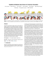 | Tangible and Modular Input Device for Character Articulation Alec Jacobson, Daniele Panozzo, Oliver Glauser, Cédric Pradalier, Otmar Hilliges, Olga Sorkine-Hornung | | | 2014 | Virtual Reality | ✔️ | 0 | | × | | 2 |
| Factored Axis-Aligned Filtering for Rendering Multiple Distribution Effects Soham Uday Mehta, JiaXian Yao, Ravi Ramamoorthi, Fredo Durand | | | 2014 | Rendering | × | | | × | | 0 |
| Defending Continuous Collision Detection against Errors Huamin Wang | | | 2014 | Animation and Simulation | × | | | ✔️ | 4 | 0 |
| Physics-Inspired Adaptive Fracture Refinement Zhili Chen, Miaojun Yao, Renguo Feng, Huamin Wang | | | 2014 | Animation and Simulation | × | | | × | | 0 |
| Projective Dynamics: Fusing Constraint Projections for Fast Simulation Sofien Bouaziz, Sebastian Martin, Tiantian Liu, Ladislav Kavan, Mark Pauly | | | 2014 | Animation and Simulation | × | | | ✔️ | 1 | 0 |
| Shape2Pose: Human-Centric Shape Analysis Vladimir G. Kim, Siddhartha Chaudhuri, Leonidas Guibas, Thomas Funkhouser | | | 2014 | Geometry | ✔️ | 0 | | × | | 1 |
| Pixie dust: graphics generated by levitated and animated objects in computational acoustic-potential field Yoichi Ochiai, Takayuki Hoshi, Jun Rekimoto | | | 2014 | Virtual Reality | × | | | × | | 0 |
| The Visual Microphone: Passive Recovery of Sound from Video Abe Davis, Michael Rubinstein, Neal Wadhwa, Gautham J. Mysore, Frédo Durand, William T. Freeman | | | 2014 | Images | ✔️ | 3 | | × | | 1 |
| 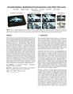 | Cascaded Displays: Spatiotemporal Superresolution using Offset Pixel Layers Felix Heide, Douglas Lanman, Dikpal Reddy, Jan Kautz, Kari Pulli, David Luebke | | | 2014 | Virtual Reality | × | | | × | | 0 |
| Learning Bicycle Stunts Jie Tan, Yuting Gu, C. Karen Liu, Greg Turk | | | 2014 | Animation and Simulation | × | | | × | | 0 |
| Eyeglasses-free Display: Towards Correcting Visual Aberrations with Computational Light Field Displays Fu-Chung Huang, Gordon Wetzstein, Brian A. Barsky, Ramesh Raskar | | | 2014 | Virtual Reality | ✔️ | 4 | | × | | 2 |
| Provably Good Planar Mappings Roi Poranne, Yaron Lipman | | | 2014 | Geometry | ✔️ | 3 | | × | | 1 |
| Flower Modeling via X-ray Computed Tomography Takashi Ijiri, Shin Yoshizawa, Hideo Yokota, Takeo Igarashi | | | 2014 | Geometry | ✔️ | 5 | | × | | 1 |
| How do people edit light fields? Adrian Jarabo, Belen Masia, Adrien Bousseau, Fabio Pellacini, Diego Gutierrez | | | 2014 | Virtual Reality | ✔️ | 2 | | × | | 1 |
| Blending Liquids Karthik Raveendran, Chris Wojtan, Nils Thuerey, Greg Turk | | | 2014 | Animation and Simulation | × | | | ✔️ | 1 | 0 |
| Design and Fabrication by Example Adriana Schulz, Ariel Shamir, David I. W. Levin, Pitchaya Sitthi-amorn, Wojciech Matusik | | | 2014 | Fabrication | × | | | × | | 0 |
| True2Form: 3D Curve Networks from 2D Sketches via Selective Regularization Baoxuan Xu, William Chang, Alla Sheffer, Adrien Bousseau, James McCrae, Karan Singh | | | 2014 | Geometry | × | | | × | | 0 |
| Pteromys: Interactive Design and Optimization of Free-formed Free-flight Model Airplanes Nobuyuki Umetani, Yuki Koyama, Ryan Schmidt, Takeo Igarashi | | | 2014 | Fabrication | × | | | × | | 0 |
| Point morphology Stéphane Calderon, Tamy Boubekeur | | | 2014 | Geometry | × | | | ✔️ | 2 | 0 |
| A Similarity Measure for Illustration Style Elena Garces, Aseem Agarwala, Diego Gutierrez, Aaron Hertzmann | | | 2014 | Images | × | | | × | | 0 |
| Adaptive Tearing and Cracking of Thin Sheets Tobias Pfaff, Rahul Narain, Juan Miguel de Joya, James F. O'Brien | | | 2014 | Animation and Simulation | ✔️ | 0 | | × | | 1 |
| 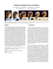 | Capturing and Stylizing Hair for 3D Fabrication Jose I. Echevarria, Derek Bradley, Diego Gutierrez, Thabo Beeler | | | 2014 | Fabrication | × | | | × | | 0 |
| Color Map Optimization for 3D Reconstruction with Consumer Depth Cameras Qian-Yi Zhou, Vladlen Koltun | | | 2014 | Geometry | × | | | × | | 0 |
| Intrinsic Video and Applications Genzhi Ye, Elena Garces, Yebin Liu, Qionghai Dai, Diego Gutierrez | | | 2014 | Images | × | | | ✔️ | 2 | 0 |
| Sensitivity-optimized Rigging for Example-based Real-time Clothing Synthesis Weiwei Xu, Nobuyuki Umentani, Qianwen Chao, Jie Mao, Xiaogang Jin, Xin Tong | | | 2014 | Animation and Simulation | × | | | × | | 0 |
| Style Transfer for Headshot Portraits YiChang Shih, Sylvain Paris, Connelly Barnes, William T. Freeman, Frédo Durand | | | 2014 | Images | ✔️ | 4 | | × | | 1 |
| 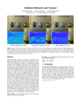 | Multiplexed Metropolis Light Transport Toshiya Hachisuka, Anton S. Kaplanyan, Carsten Dachsbacher | | | 2014 | Rendering | ✔️ | 3 | | × | | 1 |
| A Comprehensive Framework for Rendering Layered Materials Wenzel Jakob, Eugene d'Eon, Otto Jakob, Steve Marschner | | | 2014 | Rendering | ✔️ | 1 | | × | | 0 |
| 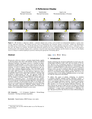 | A Reflectance Display Daniel Glasner, Todd Zickler, Anat Levin | | | 2014 | Virtual Reality | × | | | × | | 0 |
| Pinlight Displays: Wide Field of View Augmented Reality Eyeglasses using Defocused Point Light Sources Andrew Maimone, Douglas Lanman, Kishore Rathinavel, Kurtis Keller, David Luebke, Henry Fuchs | | | 2014 | Virtual Reality | × | | | × | | 0 |
| Controlling Singular Values with Semidefinite Programming Shahar Z. Kovalsky, Noam Aigerman, Ronen Basri, Yaron Lipman | | | 2014 | Geometry | ✔️ | 4 | | × | | 1 |
| Computational Design of Linkage-Based Characters Bernhard Thomaszewski, Stelian Coros, Damien Gauge, Vittorio Megaro, Eitan Grinspun, Markus Gross | | | 2014 | Fabrication | × | | | × | | 0 |
| A Compressive Light Field Projection System Matthew Hirsch, Gordon Wetzstein, Ramesh Raskar | | | 2014 | Virtual Reality | ✔️ | 4 | | × | 1 | 1 |
| 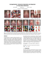 | AverageExplorer: interactive exploration and alignment of visual data collections Jun-Yan Zhu, Yong Jae Lee, Alexei A. Efros | | | 2014 | Images | × | | | × | | 0 |
| Multimaterial Mesh-Based Surface Tracking Fang Da, Christopher Batty, Eitan Grinspun | | | 2014 | Animation and Simulation | ✔️ | 5 | | × | | 0 |
| From capture to simulation: connecting forward and inverse problems in fluids James Gregson, Ivo Ihrke, Nils Thuerey, Wolfgang Heidrich | | | 2014 | Animation and Simulation | × | | | ✔️ | 4 | 0 |
| Modeling and Optimizing Eye Vergence Response to Stereoscopic Cuts Krzysztof Templin, Piotr Didyk, Karol Myszkowski, Mohamed M. Hefeeda, Hans-Peter Seidel, Wojciech Matusik | | | 2014 | Virtual Reality | × | | | × | | 0 |
| A Constructive Theory of Sampling for Image Synthesis using Reproducing Kernel Bases Christian Lessig, Mathieu Desbrun, Eugene Fiume | | | 2014 | Rendering | × | | | ✔️ | 2 | 0 |
| 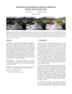 | Simulating and compensating changes in appearance between day and night vision Robert Wanat, Rafał K. Mantiuk | | | 2014 | Images | × | | | × | | 0 |
| 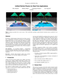 | Unified Particle Physics for Real-Time Applications Miles Macklin, Matthias Müller, Nuttapong Chentanez, Tae-Yong Kim | | | 2014 | Animation and Simulation | × | | | ✔️ | 3 | 0 |
| Bridging the Gap: Automated Steady Scaffoldings for 3D Printing Jérémie Dumas, Jean Hergel, Sylvain Lefebvre | | | 2014 | Fabrication | × | | | × | | 0 |
| Robust Field-Aligned Global Parametrization Ashish Myles, Nico Pietroni, Denis Zorin | | | 2014 | Geometry | × | | | × | | 0 |
| Rendering Glints on High-Resolution Normal-Mapped Specular Surfaces Ling-Qi Yan, Miloš Hašan, Wenzel Jakob, Jason Lawrence, Steve Marschner, Ravi Ramamoorthi | | | 2014 | Rendering | × | | | × | | 0 |
| Animating Deformable Objects using Sparse Spacetime Constraints Christian Schulz, Christoph von Tycowicz, Hans-Peter Seidel, Klaus Hildebrandt | | | 2014 | Animation and Simulation | × | | | × | | 0 |
| Spin-It: Optimizing Moment of Inertia for Spinnable Objects Moritz Bächer, Emily Whiting, Bernd Bickel, Olga Sorkine-Hornung | | | 2014 | Fabrication | × | | | ✔️ | 2 | 0 |
| Lifted Bijections for Low Distortion Surface Mappings Noam Aigerman, Roi Poranne, Yaron Lipman | | | 2014 | Geometry | × | | | ✔️ | 2 | 0 |
| Estimating Image Depth Using Shape Collections Hao Su, Qixing Huang, Niloy J. Mitra, Yangyan Li, Leonidas Guibas | | | 2014 | Images | × | | | × | | 0 |
| Subspace Clothing Simulation Using Adaptive Bases Fabian Hahn, Bernhard Thomaszewski, Stelian Coros, Robert W. Sumner, Forrester Cole, Mark Meyer, Tony DeRose, Markus Gross | | | 2014 | Animation and Simulation | × | | | ✔️ | 1 | 0 |
| Robust and Accurate Skeletal Rigging from Mesh Sequences Binh Huy Le, Zhigang Deng | | | 2014 | Animation and Simulation | ✔️ | 2 | | × | | 1 |
| Inverse Procedural Modeling of Facade Layouts Fuzhang Wu, Dong-Ming Yan, Weiming Dong, Xiaopeng Zhang, Peter Wonka | | | 2014 | Geometry | × | | | × | | 0 |
| Floating Scale Surface Reconstruction Simon Fuhrmann, Michael Goesele | | | 2014 | Geometry | ✔️ | 4 | | × | | 2 |
| Computing layouts with deformable templates Chi-Han Peng, Yong-Liang Yang, Peter Wonka | | | 2014 | Geometry | × | | | × | | 0 |
| Real-Time Non-Rigid Reconstruction Using an RGB-D Camera Michael Zollhöfer, Matthias Nießner, Shahram Izadi, Christoph Rehmann, Christopher Zach, Matthew Fisher, Chenglei Wu, Andrew Fitzgibbon, Charles Loop, Christian Theobalt, Marc Stamminger | | | 2014 | Animation and Simulation | × | | | × | | 0 |
| Designing Inflatable Structures Mélina Skouras, Bernhard Thomaszewski, Peter Kaufmann, Akash Garg, Bernd Bickel, Eitan Grinspun, Markus Gross | | | 2014 | Fabrication | × | | | × | | 0 |
| Detailed Water with Coarse Grids: Combining Surface Meshes and Adaptive Discontinuous Galerkin Essex Edwards, Robert Bridson | | | 2014 | Animation and Simulation | × | | | ✔️ | 1 | 0 |
| Build-to-Last: Strength to Weight 3D Printed Objects Lin Lu, Andrei Sharf, Haisen Zhao, Yuan Wei, Qingnan Fan, Xuelin Chen, Yann Savoye, Changhe Tu, Daniel Cohen-Or, Baoquan Chen | | | 2014 | Fabrication | × | | | × | | 0 |
| Vector Graphics Complexes Boris Dalstein, Rémi Ronfard, Michiel van de Panne | | | 2014 | Images | ✔️ | 5 | | × | | 1 |
| Interactive Manipulation of Large-Scale Crowd Animation Jongmin Kim, Yeongho Seol, Taesoo Kwon, Jehee Lee | | | 2014 | Animation and Simulation | × | | | × | | 0 |
| Smoke Rings from Smoke Steffen Weißmann, Ulrich Pinkall, Peter Schröder | | | 2014 | Animation and Simulation | ✔️ | 4 | | × | | 1 |
 | Continuous Projection for Fast L1 Reconstruction Reinhold Preiner, Oliver Mattausch, Murat Arikan, Renato Pajarola, Michael Wimmer | | | 2014 | Geometry | ✔️ | 2 | | × | | 2 |
| Boxelization: Folding 3D Objects into Boxes Yahan Zhou, Shinjiro Sueda, Wojciech Matusik, Ariel Shamir | | | 2014 | Geometry | × | | | × | | 0 |
| Darkroom: Compiling High-Level Image Processing Code into Hardware Pipelines James Hegarty, John Brunhaver, Zachary DeVito, Jonathan Ragan-Kelley, Noy Cohen, Steven Bell, Artem Vasilyev, Mark Horowitz, Pat Hanrahan | | | 2014 | Images | ✔️ | 0 | | × | | 1 |
| Earth mover's distances on discrete surfaces Justin Solomon, Raif Rustamov, Leonidas Guibas, Adrian Butscher | | | 2014 | Geometry | ✔️ | 5 | | × | | 1 |
| Augmented MPM for phase-change and varied materials Alexey Stomakhin, Craig Schroeder, Chenfanfu Jiang, Lawrence Chai, Joseph Teran, Andrew Selle | | | 2014 | Animation and Simulation | × | | | ✔️ | 1 | 0 |
| Eigenmode Compression for Modal Sound Models Timothy R. Langlois, Steven S. An, Kelvin K. Jin, Doug L. James | | | 2014 | Animation and Simulation | × | | | × | | 0 |
| Inverse-Foley Animation: Synchronizing rigid-body motions to sound Timothy R. Langlois, Doug L. James | | | 2014 | Animation and Simulation | × | | | × | | 0 |
| Frame Fields: Anisotropic and Non-Orthogonal Cross Fields Daniele Panozzo, Enrico Puppo, Marco Tarini, Olga Sorkine-Hornung | | | 2014 | Geometry | ✔️ | 3 | | × | | 1 |
| Reflectance scanning: estimating shading frame and BRDF with generalized linear light sources Guojun Chen, Yue Dong, Pieter Peers, Jiawan Zhang, Xin Tong | | | 2014 | Rendering | × | | | ✔️ | 4 | 0 |
| 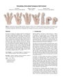 | Simulating articulated subspace self-contact Yun Teng, Miguel A. Otaduy, Theodore Kim | | | 2014 | Animation and Simulation | × | | | × | | 0 |
 | Rigid Stabilization of Facial Expressions Thabo Beeler, Derek Bradley | | | 2014 | Animation and Simulation | × | | | × | | 0 |
 | Look Over Here: Attention-Directing Composition of Manga Elements Ying Cao, Rynson W. H. Lau, Antoni B. Chan | | | 2014 | Images | × | | | × | | 0 |
| 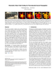 | Parametric Wave Field Coding for Precomputed Sound Propagation Nikunj Raghuvanshi, John Snyder | | | 2014 | Animation and Simulation | × | | | × | | 0 |
| Meta-representations of Shape Families Noa Fish, Melinos Averkiou, Oliver van Kaick, Olga Sorkine-Hornung, Daniel Cohen-Or, Niloy J. Mitra | | | 2014 | Geometry | × | | | × | | 0 |
| Discrete Stochastic Microfacet Models Wenzel Jakob, Miloš Hašan, Ling-Qi Yan, Jason Lawrence, Ravi Ramamoorthi, Steve Marschner | | | 2014 | Rendering | ✔️ | 1 | | × | | 2 |
| Fast Multipole Representation of Diffusion Curves and Points Timothy Sun, Papoj Thamjaroenporn, Changxi Zheng | | | 2014 | Images | × | | | ✔️ | 2 | 0 |
| Bilateral Texture Filtering Hojin Cho, Hyunjoon Lee, Henry Kang, Seungyong Lee | | | 2014 | Images | × | | | ✔️ | 4 | 0 |
| An Asymptotic Numerical Method for Inverse Elastic Shape Design Xiang Chen, Changxi Zheng, Weiwei Xu, Kun Zhou | | | 2014 | Fabrication | ✔️ | 5 | | × | | 0 |
| DecoBrush: Drawing Structured Decorative Patterns by Example Jingwan Lu, Connelly Barnes, Connie Wan, Paul Asente, Radomir Mech, Adam Finkelstein | | | 2014 | Images | × | | | × | | 0 |
| Proactive 3D Scanning of Inaccessible Parts Feilong Yan, Andrei Sharf, Wenzhen Lin, Hui Huang, Baoquan Chen | | | 2014 | Geometry | × | | | × | | 0 |
 | Generalizing Locomotion Style to New Animals With Inverse Optimal Regression Kevin Wampler, Zoran Popović, Jovan Popović | | | 2014 | Animation and Simulation | × | | | × | | 0 |
| genBRDF: Discovering New Analytic BRDFs with Genetic Programming Adam Brady, Jason Lawrence, Pieter Peers, Westley Weimer | | | 2014 | Rendering | × | | | × | | 0 |
| Robust Hair Capture Using Simulated Examples Liwen Hu, Chongyang Ma, Linjie Luo, Hao Li | | | 2014 | Geometry | × | | | × | | 0 |
| First-person Hyper-lapse videos Johannes Kopf, Michael F. Cohen, Richard Szeliski | | | 2014 | Images | ✔️ | 4 | | × | | 0 |
| Self-Refining Games using Player Analytics Matt Stanton, Ben Humberston, Brandon Kase, James F. O'Brien, Kayvon Fatahalian, Adrien Treuille | | | 2014 | Animation and Simulation | × | | | × | | 0 |
| PushPull++ Markus Lipp, Peter Wonka, Pascal Müller | | | 2014 | Geometry | × | | | ✔️ | 2 | 0 |
| Automatic Editing of Footage from Multiple Social Cameras Ido Arev, Hyun Soo Park, Yaser Sheikh, Jessica Hodgins, Ariel Shamir | | | 2014 | Images | × | | | × | | 0 |
| Embree: a kernel framework for efficient CPU ray tracing Ingo Wald, Sven Woop, Carsten Benthin, Gregory S. Johnson, Manfred Ernst | | | 2014 | Rendering | ✔️ | 5 | | × | | 2 |
| High-contrast Computational Caustic Design Yuliy Schwartzburg, Romain Testuz, Andrea Tagliasacchi, Mark Pauly | | | 2014 | Fabrication | × | | | ✔️ | 1 | 0 |
| Codimensional Surface Tension Flow on Simplicial Complices Bo Zhu, Ed Quigley, Matthew Cong, Justin Solomon, Ronald Fedkiw | | | 2014 | Animation and Simulation | × | | | ✔️ | 1 | 0 |
| EZ-sketching: three-level optimization for error-tolerant image tracing Qingkun Su, Wing Ho Andy Li, Jue Wang, Hongbo Fu | | | 2014 | Images | × | | | × | | 0 |
| On-line Learning of Parametric Mixture Models for Light Transport Simulation Jiří Vorba, Ondřej Karlík, Martin Šik, Tobias Ritschel, Jaroslav Křivánek | | | 2014 | Rendering | ✔️ | 1 | | × | | 2 |
| Displaced Dynamic Expression Regression for Real-time Facial Tracking and Animation Chen Cao, Qiming Hou, Kun Zhou | | | 2014 | Animation and Simulation | × | | | × | | 0 |
| Image Completion using Planar Structure Guidance Jia-Bin Huang, Sing Bing Kang, Narendra Ahuja, Johannes Kopf | | | 2014 | Images | ✔️ | 1 | | × | | 2 |
| Intrinsic Images in the Wild Sean Bell, Kavita Bala, Noah Snavely | | | 2014 | Images | ✔️ | 5 | | × | | 1 |
| Compressive Epsilon Photography for Post-Capture Control in Digital Imaging Atsushi Ito, Salil Tambe, Kaushik Mitra, Aswin C. Sankaranarayanan, Ashok Veeraraghavan | | | 2014 | Images | × | | | × | | 0 |
| VideoSnapping: Interactive Synchronization of Multiple Videos Oliver Wang, Christopher Schroers, Henning Zimmer, Markus Gross, Alexander Sorkine-Hornung | | | 2014 | Images | × | | | ✔️ | 1 | 0 |
| 3D Object Manipulation in a Single Image using Stock 3D Models Natasha Kholgade, Tomas Simon, Alexei Efros, Yaser Sheikh | | | 2014 | Images | ✔️ | 2 | | × | | 1 |
| Controllable High-Fidelity Facial Performance Transfer Feng Xu, Jinxiang Chai, Yilong Liu, Xin Tong | | | 2014 | Animation and Simulation | × | | | × | | 0 |
| A Reduced Model for Interactive Hairs Menglei Chai, Changxi Zheng, Kun Zhou | | | 2014 | Animation and Simulation | × | | | ✔️ | 1 | 0 |
| Learning a Manifold of Fonts Neill D. F. Campbell, Jan Kautz | | | 2014 | Geometry | ✔️ | 4 | | × | | 0 |
| 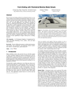 | Form-finding with polyhedral meshes made simple Chengcheng Tang, Xiang Sun, Alexandra Gomes, Johannes Wallner, Helmut Pottmann | | | 2014 | Geometry | × | | | × | | 0 |
 | AMFS: adaptive multi-frequency shading for future graphics processors Petrik Clarberg, Robert Toth, Jon Hasselgren, Jim Nilsson, Tomas Akenine-Möller | | | 2014 | Rendering | × | | | × | | 0 |
| Active Volumetric Musculoskeletal Systems Ye Fan, Joshua Litven, Dinesh K. Pai | | | 2014 | Animation and Simulation | × | | | ✔️ | 1 | 0 |
| High-order diffraction and diffuse reflections for interactive sound propagation in large environments Carl Schissler, Ravish Mehra, Dinesh Manocha | | | 2014 | Animation and Simulation | × | | | × | | 0 |
 | Space-Time Editing of Elastic Motion through Material Optimization and Reduction Siwang Li, Jin Huang, Fernando de Goes, Xiaogang Jin, Hujun Bao, Mathieu Desbrun | | | 2014 | Animation and Simulation | × | | | × | | 0 |
| Online Motion Synthesis Using Sequential Monte Carlo Perttu Hämäläinen, Sebastian Eriksson, Esa Tanskanen, Ville Kyrki, Jaakko Lehtinen | | | 2014 | Animation and Simulation | × | | | ✔️ | 2 | 0 |
| Unifying points, beams, and paths in volumetric light transport simulation Jaroslav Křivánek, Iliyan Georgiev, Toshiya Hachisuka, Petr Vévoda, Martin Šik, Derek Nowrouzezahrai, Wojciech Jarosz | | | 2014 | Rendering | ✔️ | 5 | | × | | 3 |
| Relating shapes via geometric symmetries and regularities Art Tevs, Qixing Huang, Michael Wand, Hans-Peter Seidel, Leonidas Guibas | | | 2014 | Geometry | × | | | × | | 0 |
| Compact Precomputed Voxelized Shadows Erik Sintorn, Viktor Kämpe, Ola Olsson, Ulf Assarsson | | | 2014 | Rendering | ✔️ | 3 | | × | | 2 |
| Dynamic Ray Stream Traversal Rasmus Barringer, Tomas Akenine-Möller | | | 2014 | Rendering | ✔️ | 5 | | × | | 1 |
| Learning to be a depth camera for close-range human capture and interaction Sean Ryan Fanello, Cem Keskin, Shahram Izadi, Pushmeet Kohli, David Kim, David Sweeney, Antonio Criminisi, Jamie Shotton, Sing Bing Kang, Tim Paek | | | 2014 | Animation and Simulation | × | | | × | | 0 |
| The Connect-The-Dots Family of Puzzles: Design and Automatic Generation Maarten Löffler, Mira Kaiser, Tim van Kapel, Gerwin Klappe, Marc van Kreveld, Frank Staals | | | 2014 | Geometry | × | | | × | | 0 |
| Breathing Life into Shape: Capturing, Modeling and Animating 3D Human Breathing Aggeliki Tsoli, Naureen Mahmood, Michael J. Black | | | 2014 | Animation and Simulation | × | | | × | | 0 |
| Interactive Shape Modeling using a Skeleton-Mesh Co-Representation J. Andreas Bærentzen, Rinat Abdrashitov, Karan Singh | | | 2014 | Geometry | × | | | × | | 0 |
| Locally Injective Parametrization With Arbitrary Fixed Boundaries Ofir Weber, Denis Zorin | | | 2014 | Geometry | × | | | × | | 0 |
| GazeStereo3D: Seamless Disparity Manipulations Petr Kellnhofer, Piotr Didyk, Karol Myszkowski, Mohamed M. Hefeeda, Hans-Peter Seidel, Wojciech Matusik | | | 2016 | Virtual Reality | ✔️ | 5 | | × | | 1 |
| 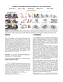 | PiGraphs: Learning Interaction Snapshots from Observations Manolis Savva, Angel X. Chang, Pat Hanrahan, Matthew Fisher, Matthias Nießner | | | 2016 | Geometry | ✔️ | 5 | | × | | 2 |
| Schrödinger's Smoke Albert Chern, Felix Knöppel, Ulrich Pinkall, Peter Schröder, Steffen Weißmann | | | 2016 | Animation and Simulation | ✔️ | 5 | | × | | 1 |
| Shadow Theatre: Discovering Human Motion from a Sequence of Silhouettes Jungdam Won, Jehee Lee | | | 2016 | Fabrication | × | | | ✔️ | 1 | 0 |
| Learning How Objects Function via Co-Analysis of Interactions Ruizhen Hu, Oliver van Kaick, Bojian Wu, Hui Huang, Ariel Shamir, Hao Zhang | | | 2016 | Geometry | × | | | × | | 0 |
| Transfiguring Portraits Ira Kemelmacher-Shlizerman | | | 2016 | Images | × | | | × | | 0 |
| Globally Optimal Toon Tracking Haichao Zhu, Xueting Liu, Tien-Tsin Wong, Pheng-Ann Heng | | | 2016 | Images | × | | | × | | 0 |
| Real-time Facial Animation with Image-based Dynamic Avatars Chen Cao, Hongzhi Wu, Yanlin Weng, Tianjia Shao, Kun Zhou | | | 2016 | Animation and Simulation | × | | | ✔️ | 1 | 0 |
| Efficient GPU Rendering of Subdivision Surfaces using Adaptive Quadtrees Wade Brainerd, Tim Foley, Manuel Kraemer, Henry Moreton, Matthias Nießner | | | 2016 | Rendering | × | | | × | | 0 |
| ProxImaL: Efficient Image Optimization using Proximal Algorithms Felix Heide, Steven Diamond, Matthias Nießner, Jonathan Ragan-Kelley, Wolfgang Heidrich, Gordon Wetzstein | | | 2016 | Images | ✔️ | 3 | | × | | 1 |
| CofiFab: Coarse-to-Fine Fabrication of Large 3D Objects Peng Song, Bailin Deng, Ziqi Wang, Zhichao Dong, Wei Li, Chi-Wing Fu, Ligang Liu | | | 2016 | Fabrication | × | | | × | | 0 |
| A Semi-Implicit Material Point Method for the Continuum Simulation of Granular Materials Gilles Daviet, Florence Bertails-Descoubes | | | 2016 | Animation and Simulation | ✔️ | 5 | | × | | 1 |
| Seamless Visual Sharing with Color Vision Deficiencies Wuyao Shen, Xiangyu Mao, Xinghong Hu, Tien-Tsin Wong | | | 2016 | Virtual Reality | × | | | × | | 0 |
| Emulating Displays with Continuously Varying Frame Rates Krzysztof Templin, Piotr Didyk, Karol Myszkowski, Hans-Peter Seidel | | | 2016 | Images | × | | | × | | 0 |
| Subdivision Exterior Calculus for Geometry Processing Fernando de Goes, Mathieu Desbrun, Mark Meyer, Tony DeRose | | | 2016 | Geometry | × | | | × | | 0 |
| Terrain-Adaptive Locomotion Skills Using Deep Reinforcement Learning Xue Bin Peng, Glen Berseth, Michiel van de Panne | | | 2016 | Animation and Simulation | ✔️ | 1 | | × | | 0 |
| Anatomically-Constrained Local Deformation Model for Monocular Face Capture Chenglei Wu, Derek Bradley, Markus Gross, Thabo Beeler | | | 2016 | Animation and Simulation | × | | | × | | 0 |
| Mapping Virtual and Physical Reality Qi Sun, Li-Yi Wei, Arie Kaufman | | | 2016 | Virtual Reality | × | | | × | | 0 |
| Artist-Directed Dynamics for 2D Animation Yunfei Bai, Danny M. Kaufman, C. Karen Liu, Jovan Popović | | | 2016 | Animation and Simulation | × | | | × | | 0 |
| An Interaction-Aware, Perceptual Model for Non-Linear Elastic Objects Michal Piovarči, David I. W. Levin, Jason Rebello, Desai Chen, Roman Ďurikovič, Hanspeter Pfister, Wojciech Matusik, Piotr Didyk | | | 2016 | Fabrication | × | | | × | | 0 |
| Non-Linear Shape Optimization Using Local Subspace Projections Przemyslaw Musialski, Christian Hafner, Florian Rist, Michael Birsak, Michael Wimmer, Leif Kobbelt | | | 2016 | Fabrication | ✔️ | 5 | | × | | 1 |
| Legible Compact Calligrams Changqing Zou, Junjie Cao, Warunika Ranaweera, Ibraheem Alhashim, Ping Tan, Alla Sheffer, Hao Zhang | | | 2016 | Images | × | | | × | | 0 |
| Designing Structurally-Sound Ornamental Curve Networks Jonas Zehnder, Stelian Coros, Bernhard Thomaszewski | | | 2016 | Fabrication | × | | | × | | 0 |
| Real-time Rendering on a Power Budget Rui Wang, Bowen Yu, Julio Marco, Tianlei Hu, Diego Gutierrez, Hujun Bao | | | 2016 | Rendering | × | | | × | | 0 |
| Bijective Maps from Simplicial Foliations Marcel Campen, Cláudio T. Silva, Denis Zorin | | | 2016 | Geometry | × | | | ✔️ | 3 | 0 |
| Time-varying Weathering in Texture Space Rachele Bellini, Yanir Kleiman, Daniel Cohen-Or | | | 2016 | Images | × | | | × | | 0 |
| Rigel: Flexible Multi-Rate Image Processing Hardware James Hegarty, Ross Daly, Zachary DeVito, Jonathan Ragan-Kelley, Mark Horowitz, Pat Hanrahan | | | 2016 | Images | ✔️ | 3 | | × | | 1 |
| Task-based Locomotion Shailen Agrawal, Michiel van de Panne | | | 2016 | Animation and Simulation | × | | | ✔️ | 1 | 0 |
| Crowd-driven Mid-scale Layout Design Tian Feng, Lap-Fai Yu, Sai-Kit Yeung, KangKang Yin, Kun Zhou | | | 2016 | Geometry | × | | | × | | 0 |
| Real-Time Polygonal-Light Shading with Linearly Transformed Cosines Eric Heitz, Jonathan Dupuy, Stephen Hill, David Neubelt | | | 2016 | Rendering | ✔️ | 4 | | × | | 1 |
| 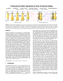 | Physics-driven pattern adjustment for direct 3D garment editing Aric Bartle, Alla Sheffer, Vladimir G. Kim, Danny M. Kaufman, Nicholas Vining, Floraine Berthouzoz | | | 2016 | Fabrication | × | | | × | | 0 |
| Multiphase SPH Simulation for Interactive Fluids and Solids Xiao Yan, Yun-Tao Jiang, Chen-Feng Li, Ralph R. Martin, Shi-Min Hu | | | 2016 | Animation and Simulation | × | | | ✔️ | 1 | 0 |
| Volume-encoded UV-maps Marco Tarini | | | 2016 | Geometry | ✔️ | 1 | | × | | 0 |
| Surface-Only Liquids Fang Da, David Hahn, Christopher Batty, Chris Wojtan, Eitan Grinspun | | | 2016 | Animation and Simulation | ✔️ | 3 | | × | | 0 |
| Computational Design of Reconfigurables Akash Garg, Alec Jacobson, Eitan Grinspun | | | 2016 | Fabrication | × | | | × | | 0 |
| Mesh Arrangements for Solid Geometry Qingnan Zhou, Eitan Grinspun, Denis Zorin, Alec Jacobson | | | 2016 | Geometry | ✔️ | 3 | | × | | 2 |
| Fast approximations for boundary element based brittle fracture simulation David Hahn, Chris Wojtan | | | 2016 | Animation and Simulation | ✔️ | 0 | | × | | 0 |
| Entropic Metric Alignment for Correspondence Problems Justin Solomon, Gabriel Peyré, Vladimir G. Kim, Suvrit Sra | | | 2016 | Geometry | ✔️ | 5 | | × | | 0 |
| Toward Animating Water with Complex Acoustic Bubbles Timothy R. Langlois, Changxi Zheng, Doug L. James | | | 2016 | Animation and Simulation | ✔️ | 2 | | × | | 1 |
| Efficient dynamic skinning with low-rank helper bone controllers Tomohiko Mukai, Shigeru Kuriyama | | | 2016 | Animation and Simulation | × | | | × | | 0 |
| Drucker-Prager Elastoplasticity for Sand Animation Gergely Klár, Theodore Gast, Andre Pradhana, Chuyuan Fu, Craig Schroeder, Chenfanfu Jiang, Joseph Teran | | | 2016 | Animation and Simulation | × | | | × | | 0 |
| Live intrinsic video Abhimitra Meka, Michael Zollhöfer, Christian Richardt, Christian Theobalt | | | 2016 | Images | × | | | × | | 0 |
| Automatic Triage for a Photo Series Huiwen Chang, Fisher Yu, Jue Wang, Douglas Ashley, Adam Finkelstein | | | 2016 | Images | ✔️ | 1 | | × | | 0 |
| 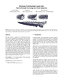 | Resolving Fluid Boundary Layers with Particle Strength Exchange and Weak Adaptivity Xinxin Zhang, Minchen Li, Robert Bridson | | | 2016 | Animation and Simulation | ✔️ | 5 | | × | | 0 |
| Synthesis of Filigrees for Digital Fabrication Weikai Chen, Xiaolong Zhang, Shiqing Xin, Yang Xia, Sylvain Lefebvre, Wenping Wang | | | 2016 | Fabrication | × | | | ✔️ | 1 | 0 |
| Adjoint-Driven Russian Roulette and Splitting in Light Transport Simulation Jiří Vorba, Jaroslav Křivánek | | | 2016 | Rendering | × | | | ✔️ | 1 | 0 |
| Point Registration via Efficient Convex Relaxation Haggai Maron, Nadav Dym, Itay Kezurer, Shahar Kovalsky, Yaron Lipman | | | 2016 | Geometry | ✔️ | 5 | | × | | 2 |
| Computational Thermoforming Christian Schüller, Daniele Panozzo, Anselm Grundhöfer, Henning Zimmer, Evgeni Sorkine, Olga Sorkine-Hornung | | | 2016 | Fabrication | ✔️ | 1 | | × | | 0 |
| Position-Normal Distributions for Efficient Rendering of Specular Microstructure Ling-Qi Yan, Miloš Hašan, Steve Marschner, Ravi Ramamoorthi | | | 2016 | Rendering | × | | | × | | 0 |
| Pose-Space Subspace Dynamics Hongyi Xu, Jernej Barbič | | | 2016 | Animation and Simulation | × | | | × | | 0 |
| Reflectance Modeling by Neural Texture Synthesis Miika Aittala, Timo Aila, Jaakko Lehtinen | | | 2016 | Rendering | × | | | × | | 0 |
| Wasserstein Barycentric Coordinates: Histogram Regression Using Optimal Transport Nicolas Bonneel, Gabriel Peyré, Marco Cuturi | | | 2016 | Images | ✔️ | 3 | | × | | 2 |
| Preserving Geometry and Topology for Fluid Flows with Thin Obstacles and Narrow Gaps Vinicius C. Azevedo, Christopher Batty, Manuel M. Oliveira | | | 2016 | Animation and Simulation | × | | | ✔️ | 1 | 0 |
| Accelerated Quadratic Proxy for Geometric Optimization Shahar Z. Kovalsky, Meirav Galun, Yaron Lipman | | | 2016 | Geometry | ✔️ | 5 | | × | | 1 |
| Cinema 3D: Large Scale Automultiscopic Display Netalee Efrat, Piotr Didyk, Mike Foshey, Wojciech Matusik, Anat Levin | | | 2016 | Virtual Reality | × | | | × | | 0 |
| Procedural Voronoi Foams for Additive Manufacturing Jonàs Martínez, Jérémie Dumas, Sylvain Lefebvre | | | 2016 | Fabrication | ✔️ | 1 | | × | | 0 |
| A System for Rapid Exploration of Shader Optimization Choices Yong He, Tim Foley, Kayvon Fatahalian | | | 2016 | Rendering | ✔️ | 1 | | × | | 1 |
| G1 Non-Uniform Catmull-Clark Surfaces Xin Li, G. Thomas Finnigan, Thomas W. Sederberg | | | 2016 | Geometry | × | | | × | | 0 |
| ZoeMatrope: a system for physical material design Leo Miyashita, Kota Ishihara, Yoshihiro Watanabe, Masatoshi Ishikawa | | | 2016 | Virtual Reality | × | | | × | | 0 |
| Bounded distortion harmonic shape interpolation Edward Chien, Renjie Chen, Ofir Weber | | | 2016 | Geometry | ✔️ | 5 | | × | | 1 |
| Tactile Mesh Saliency Manfred Lau, Kapil Dev, Weiqi Shi, Julie Dorsey, Holly Rushmeier | | | 2016 | Virtual Reality | × | | | × | | 0 |
| Computational Imaging with Multi-Camera Time-of-Flight Systems Shikhar Shrestha, Felix Heide, Wolfgang Heidrich, Gordon Wetzstein | | | 2016 | Images | ✔️ | 0 | | × | | 1 |
| On the Convexity and Feasibility of the Bounded Distortion Harmonic Mapping Problem Zohar Levi, Ofir Weber | | | 2016 | Geometry | × | | | ✔️ | 2 | 0 |
| Fast and Exact Discrete Geodesic Computation Based on Triangle-Oriented Wavefront Propagation Yipeng Qin, Xiaoguang Han, Hongchuan Yu, Yizhou Yu, Jianjun Zhang | | | 2016 | Geometry | ✔️ | 5 | | × | | 1 |
| Perceptual Effect of Shoulder Motions on Crowd Animations Ludovic Hoyet, Anne-Helene Olivier, Richard Kulpa, Julien Pettré | | | 2016 | Animation and Simulation | × | | | × | | 0 |
| Fitting Procedural Yarn Models for Realistic Cloth Rendering Shuang Zhao, Fujun Luan, Kavita Bala | | | 2016 | Rendering | ✔️ | 3 | | × | | 0 |
| Perspective-aware Manipulation of Portrait Photos Ohad Fried, Eli Shechtman, Dan B. Goldman, Adam Finkelstein | | | 2016 | Images | ✔️ | 5 | | × | | 0 |
| Practical Multispectral Lighting Reproduction Chloe LeGendre, Xueming Yu, Dai Liu, Jay Busch, Andrew Jones, Sumanta Pattanaik, Paul Debevec | | | 2016 | Rendering | × | | | × | | 0 |
| Computational Network Design from Functional Specifications Chi-Han Peng, Yong-Liang Yang, Fan Bao, Daniel Fink, Dong-Ming Yan, Peter Wonka, Niloy J. Mitra | | | 2016 | Geometry | × | | | × | | 0 |
| 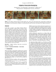 | Adaptive Polynomial Rendering Bochang Moon, Steven McDonagh, Kenny Mitchell, Markus Gross | | | 2016 | Rendering | × | | | × | | 0 |
| Flow-Guided Warping for Image-Based Shape Manipulation Romain Vergne, Pascal Barla, Georges-Pierre Bonneau, Roland W. Fleming | | | 2016 | Images | × | | | × | | 0 |
| Erosion thickness on medial axes of 3D shapes Yajie Yan, Kyle Sykes, Erin Chambers, David Letscher, Tao Ju | | | 2016 | Geometry | ✔️ | 4 | | × | | 1 |
| RAID: A Relation-Augmented Image Descriptor Paul Guerrero, Niloy J. Mitra, Peter Wonka | | | 2016 | Images | ✔️ | 5 | | × | | 1 |
| A Compiler for 3D Machine Knitting James McCann, Lea Albaugh, Vidya Narayanan, April Grow, Wojciech Matusik, Jennifer Mankoff, Jessica Hodgins | | | 2016 | Fabrication | × | | | ✔️ | 1 | 0 |
| The Diffractive Achromat: Full Spectrum Computational Imaging with Diffractive Optics Yifan Peng, Qiang Fu, Felix Heide, Wolfgang Heidrich | | | 2016 | Images | × | | | ✔️ | 2 | 0 |
| Sky is Not the Limit: Semantic-Aware Sky Replacement Yi-Hsuan Tsai, Xiaohui Shen, Zhe Lin, Kalyan Sunkavalli, Ming-Hsuan Yang | | | 2016 | Images | ✔️ | 5 | | × | | 0 |
| Multiple-Scattering Microfacet BSDFs with the Smith Model Eric Heitz, Johannes Hanika, Eugene d'Eon, Carsten Dachsbacher | | | 2016 | Rendering | ✔️ | 5 | | × | | 2 |
| Beyond Developable: Computational Design and Fabrication with Auxetic Materials Mina Konaković, Keenan Crane, Bailin Deng, Sofien Bouaziz, Daniel Piker, Mark Pauly | | | 2016 | Fabrication | × | | | ✔️ | 1 | 0 |
| Multi-Scale Rendering of Scratched Materials using a Structured SV-BRDF Model Boris Raymond, Gaël Guennebaud, Pascal Barla | | | 2016 | Rendering | × | | | × | | 0 |
 | Fidelity vs. Simplicity: a Global Approach to Line Drawing Vectorization Jean-Dominique Favreau, Florent Lafarge, Adrien Bousseau | | | 2016 | Images | ✔️ | 5 | | × | | 0 |
| Realtime 3D Eye Gaze Animation Using a Single RGB Camera Congyi Wang, Fuhao Shi, Shihong Xia, Jinxiang Chai | | | 2016 | Animation and Simulation | × | | | × | | 0 |
| StyLit: illumination-guided example-based stylization of 3D renderings Jakub Fišer, Ondřej Jamriška, Michal Lukáč, Eli Shechtman, Paul Asente, Jingwan Lu, Daniel Sýkora | | | 2016 | Rendering | ✔️ | 5 | | × | | 1 |
| Binary continuous image decomposition for multi-view display Gou Koutaki | | | 2016 | Virtual Reality | ✔️ | 5 | | × | | 1 |
| PATEX: Exploring Pattern Variations Paul Guerrero, Gilbert Bernstein, Wilmot Li, Niloy J. Mitra | | | 2016 | Images | ✔️ | 5 | | × | | 2 |
| Interactive Sketching of Urban Procedural Models Gen Nishida, Ignacio Garcia-Dorado, Daniel G. Aliaga, Bedrich Benes, Adrien Bousseau | | | 2016 | Geometry | ✔️ | 5 | | × | | 0 |
| Automatically Scheduling Halide Image Processing Pipelines Ravi Teja Mullapudi, Andrew Adams, Dillon Sharlet, Jonathan Ragan-Kelley, Kayvon Fatahalian | | | 2016 | Images | ✔️ | 2 | | × | | 2 |
| Soli: Ubiquitous Gesture Sensing with Millimeter Wave Radar Jaime Lien, Nicholas Gillian, M. Emre Karagozler, Patrick Amihood, Carsten Schwesig, Erik Olson, Hakim Raja, Ivan Poupyrev | | | 2016 | Virtual Reality | × | | | × | | 0 |
| The Sketchy Database: Learning to Retrieve Badly Drawn Bunnies Patsorn Sangkloy, Nathan Burnell, Cusuh Ham, James Hays | | | 2016 | Images | ✔️ | 4 | | × | | 2 |
| Spectral Style Transfer for Human Motion between Independent Actions M. Ersin Yumer, Niloy J. Mitra | | | 2016 | Animation and Simulation | × | | | × | | 0 |
| cSculpt: A System for Collaborative Sculpting Claudio Calabrese, Gabriele Salvati, Marco Tarini, Fabio Pellacini | | | 2016 | Geometry | × | | | × | | 0 |
| All-Hex Meshing using Closed-Form Induced Polycube Xianzhong Fang, Weiwei Xu, Hujun Bao, Jin Huang | | | 2016 | Geometry | ✔️ | 1 | | × | | 1 |
| Connected Fermat Spirals for Layered Fabrication Haisen Zhao, Fanglin Gu, Qi-Xing Huang, Jorge Garcia, Yong Chen, Changhe Tu, Bedrich Benes, Hao Zhang, Daniel Cohen-Or, Baoquan Chen | | | 2016 | Fabrication | × | | | × | | 0 |
| Real-time Skeletal Skinning with Optimized Centers of Rotation Binh Huy Le, Jessica K. Hodgins | | | 2016 | Animation and Simulation | × | | | ✔️ | 3 | 0 |
| Acoustic Voxels: Computational Optimization of Modular Acoustic Filters Dingzeyu Li, David I. W. Levin, Wojciech Matusik, Changxi Zheng | | | 2016 | Fabrication | × | | | ✔️ | 1 | 0 |
| AutoHair: Fully Automatic Hair Modeling from A Single Image Menglei Chai, Tianjia Shao, Hongzhi Wu, Yanlin Weng, Kun Zhou | | | 2016 | Geometry | × | | | × | | 0 |
| Lightweight Eye Capture Using a Parametric Model Pascal Bérard, Derek Bradley, Markus Gross, Thabo Beeler | | | 2016 | Animation and Simulation | × | | | × | | 0 |
| Generalized Non-Reflecting Boundaries for Fluid Re-Simulation Morten Bojsen-Hansen, Chris Wojtan | | | 2016 | Animation and Simulation | ✔️ | 3 | | × | | 1 |
| Multi-Scale Label-Map Extraction for Texture Synthesis Yitzchak David Lockerman, Basile Sauvage, Rémi Allègre, Jean-Michel Dischler, Julie Dorsey, Holly Rushmeier | | | 2016 | Images | ✔️ | 0 | | × | | 0 |
| Efficient and Precise Interactive Hand Tracking Through Joint, Continuous Optimization of Pose and Correspondences Jonathan Taylor, Lucas Bordeaux, Thomas Cashman, Bob Corish, Cem Keskin, Toby Sharp, Eduardo Soto, David Sweeney, Julien Valentin, Benjamin Luff, Arran Topalian, Erroll Wood, Sameh Khamis, Pushmeet Kohli, Shahram Izadi, Richard Banks, Andrew Fitzgibbon, Jamie Shotton | | | 2016 | Virtual Reality | × | | | × | | 0 |
| Printing Arbitrary Meshes with a 5DOF Wireframe Printer Rundong Wu, Huaishu Peng, François Guimbretière, Steve Marschner | | | 2016 | Fabrication | × | | | ✔️ | 3 | 0 |
| Motion Graphs for Unstructured Textured Meshes Fabián Prada, Misha Kazhdan, Ming Chuang, Alvaro Collet, Hugues Hoppe | | | 2016 | Animation and Simulation | × | | | ✔️ | 1 | 0 |
| Painting Style Transfer for Head Portraits using Convolutional Neural Networks Ahmed Selim, Mohamed Elgharib, Linda Doyle | | | 2016 | Images | × | | | × | | 0 |
| Fusion4D: Real-time Performance Capture of Challenging Scenes Mingsong Dou, Sameh Khamis, Yury Degtyarev, Philip Davidson, Sean Ryan Fanello, Adarsh Kowdle, Sergio Orts Escolano, Christoph Rhemann, David Kim, Jonathan Taylor, Pushmeet Kohli, Vladimir Tankovich, Shahram Izadi | | | 2016 | Animation and Simulation | × | | | × | | 0 |
| SketchiMo: Sketch-based Motion Editing for Articulated Characters Byungkuk Choi, Roger Blanco i Ribera, J. P. Lewis, Yeongho Seol, Seokpyo Hong, Haegwang Eom, Sunjin Jung, Junyong Noh | | | 2016 | Animation and Simulation | × | | | × | | 0 |
| Additive Light Field Displays: Realization of Augmented Reality with Holographic Optical Elements Seungjae Lee, Changwon Jang, Seokil Moon, Jaebum Cho, Byoungho Lee | | | 2016 | Virtual Reality | × | | | × | | 0 |
| Learning to Simplify: Fully Convolutional Networks for Rough Sketch Cleanup Edgar Simo-Serra, Satoshi Iizuka, Kazuma Sasaki, Hiroshi Ishikawa | | | 2016 | Images | ✔️ | 4 | | × | | 1 |
 | Roto++: Accelerating Professional Rotoscoping using Shape Manifolds Wenbin Li, Fabio Viola, Jonathan Starck, Gabriel J. Brostow, Neill D. F. Campbell | | | 2016 | Images | ✔️ | 0 | | × | | 1 |
| Let there be color!: joint end-to-end learning of global and local image priors for automatic image colorization with simultaneous classification Satoshi Iizuka, Edgar Simo-Serra, Hiroshi Ishikawa | | | 2016 | Images | ✔️ | 5 | | × | | 1 |
| A Deep Learning Framework for Character Motion Synthesis and Editing Daniel Holden, Jun Saito, Taku Komura | | | 2016 | Animation and Simulation | ✔️ | 0 | | × | | 1 |
| HexEx: Robust Hexahedral Mesh Extraction Max Lyon, David Bommes, Leif Kobbelt | | | 2016 | Geometry | ✔️ | 4 | | × | | 1 |
| Unified Motion Planner for Fishes with Various Swimming Styles Daiki Satoi, Mikihiro Hagiwara, Akira Uemoto, Hisanao Nakadai, Junichi Hoshino | | | 2016 | Animation and Simulation | × | | | × | | 0 |
| Computational Design of Stable Planar-Rod Structures Eder Miguel, Mathias Lepoutre, Bernd Bickel | | | 2016 | Fabrication | × | | | × | | 0 |
| Example-based Plastic Deformation of Rigid Bodies Ben Jones, Nils Thuerey, Tamar Shinar, Adam W. Bargteil | | | 2016 | Animation and Simulation | × | | | ✔️ | 1 | 0 |
| Generating Dynamically Feasible Trajectories for Quadrotor Cameras Mike Roberts, Pat Hanrahan | | | 2016 | Animation and Simulation | × | | | × | | 0 |
| Body Talk: Crowdshaping Realistic 3D Avatars with Words Stephan Streuber, M. Alejandra Quiros-Ramirez, Matthew Q. Hill, Carina A. Hahn, Silvia Zuffi, Alice O'Toole, Michael J. Black | | | 2016 | Geometry | × | | | × | | 0 |
| Modeling Dense Inflorescences Andrew Owens, Mikolaj Cieslak, Jeremy Hart, Regine Classen-Bockhoff, Przemyslaw Prusinkiewicz | | | 2016 | Geometry | × | | | × | | 0 |
| Rich360: optimized spherical representation from structured panoramic camera arrays Jungjin Lee, Bumki Kim, Kyehyun Kim, Younghui Kim, Junyong Noh | | | 2016 | Images | × | | | × | | 0 |
| JALI: An Animator-Centric Viseme Model for Expressive Lip Synchronization Pif Edwards, Chris Landreth, Eugene Fiume, Karan Singh | | | 2016 | Animation and Simulation | × | | | × | | 0 |
| Rig Animation with a Tangible and Modular Input Device Oliver Glauser, Benedek Vartok, Wan-Chun Ma, Daniele Panozzo, Alec Jacobson, Otmar Hilliges, Olga Sorkine-Hornung | | | 2016 | Virtual Reality | ✔️ | 0 | | × | | 0 |
| Semantic soft segmentation Yağiz Aksoy, Tae-Hyun Oh, Sylvain Paris, Marc Pollefeys, Wojciech Matusik | | | 2018 | Images | ✔️ | 4 | | × | | 2 |
| Shape from Metric Albert Chern, Felix Knöppel, Ulrich Pinkall, Peter Schröder | | | 2018 | Geometry | ✔️ | 4 | | × | | 1 |
| FEPR: Fast Energy Projection for Real-Time Simulation of Deformable Objects Dimitar Dinev, Tiantian Liu, Jing Li, Bernhard Thomaszewski, Ladislav Kavan | | | 2018 | Animation and Simulation | × | | | × | | 0 |
| Mechanical characterization of structured sheet materials Christian Schumacher, Steve Marschner, Markus Gross, Bernhard Thomaszewski | | | 2018 | Animation and Simulation | × | | | × | | 0 |
| Efficient reflectance capture using an autoencoder Kaizhang Kang, Zimin Chen, Jiaping Wang, Kun Zhou, Hongzhi Wu | | | 2018 | Rendering | × | | | × | | 0 |
| Dynamic kelvinlets: secondary motions based on fundamental solutions of elastodynamics Fernando De Goes, Doug L. James | | | 2018 | Animation and Simulation | ✔️ | 4 | | × | | 2 |
| Eulerian-on-lagrangian cloth simulation Nicholas J. Weidner, Kyle Piddington, David I. W. Levin, Shinjiro Sueda | | | 2018 | Animation and Simulation | ✔️ | 0 | | × | | 1 |
 | A radiative transfer framework for spatially-correlated materials Adrian Jarabo, Carlos Aliaga, Diego Gutierrez | | | 2018 | Rendering | × | | | × | | 0 |
| Deep Video Portraits Hyeongwoo Kim, Pablo Garrido, Ayush Tewari, Weipeng Xu, Justus Thies, Matthias Niessner, Patrick Pérez, Christian Richardt, Michael Zollhöfer, Christian Theobalt | | | 2018 | Images | × | | | × | | 0 |
| Creating and chaining camera moves for qadrotor videography Ke Xie, Hao Yang, Shengqiu Huang, Dani Lischinski, Marc Christie, Kai Xu, Minglun Gong, Daniel Cohen-Or, Hui Huang | | | 2018 | Animation and Simulation | × | | | × | | 0 |
| Non-stationary texture synthesis by adversarial expansion Yang Zhou, Zhen Zhu, Xiang Bai, Dani Lischinski, Daniel Cohen-Or, Hui Huang | | | 2018 | Images | ✔️ | 5 | | × | | 1 |
| Full 3D Reconstruction of Transparent Objects Bojian Wu, Yang Zhou, Yiming Qian, Minglun Cong, Hui Huang | | | 2018 | Images | ✔️ | 0 | | × | | 0 |
| Predictive and generative neural networks for object functionality Ruizhen Hu, Zihao Yan, Jingwen Zhang, Oliver Van Kaick, Ariel Shamir, Hao Zhang, Hui Huang | | | 2018 | Geometry | ✔️ | 0 | | × | | 0 |
| P2P-NET: bidirectional point displacement net for shape transform Kangxue Yin, Hui Huang, Daniel Cohen-Or, Hao Zhang | | | 2018 | Geometry | ✔️ | 0 | | × | | 1 |
| Efficient rendering of layered materials using an atomic decomposition with statistical operators Laurent Belcour | | | 2018 | Rendering | ✔️ | 5 | | × | | 1 |
| Anderson acceleration for geometry optimization and physics simulation Yue Peng, Bailin Deng, Juyong Zhang, Fanyu Geng, Wenjie Qin, Ligang Liu | | | 2018 | Animation and Simulation | ✔️ | 5 | | × | | 2 |
| Analytic spherical harmonic coefficients for polygonal area lights Jingwen Wang, Ravi Ramamoorthi | | | 2018 | Rendering | ✔️ | 1 | | × | | 0 |
| VisemeNet: Audio-Driven Animator-Centric Speech Animation Yang Zhou, Zhan Xu, Chris Landreth, Evangelos Kalogerakis, Subhransu Maji, Karan Singh | | | 2018 | Animation and Simulation | ✔️ | 4 | | × | | 1 |
| A moving least squares material point method with displacement discontinuity and two-way rigid body coupling Yuanming Hu, Yu Fang, Ziheng Ge, Ziyin Qu, Yixin Zhu, Andre Pradhana, Chenfanfu Jiang | | | 2018 | Animation and Simulation | ✔️ | 4 | | × | | 2 |
| Towards virtual reality infinite walking: dynamic saccadic redirection Qi Sun, Anjul Patney, Li-Yi Wei, Omer Shapira, Jingwan Lu, Paul Asente, Suwen Zhu, Morgan Mcguire, David Luebke, Arie Kaufman | | | 2018 | Virtual Reality | × | | | ✔️ | 1 | 0 |
| Object-aware guidance for autonomous scene reconstruction Ligang Liu, Xi Xia, Han Sun, Qi Shen, Juzhan Xu, Bin Chen, Hui Huang, Kai Xu | | | 2018 | Images | ✔️ | 0 | | × | | 1 |
| The human touch: measuring contact with real human soft tissues Dinesh K. Pai, Austin Rothwell, Pearson Wyder-Hodge, Alistair Wick, Ye Fan, Egor Larionov, Darcy Harrison, Debanga Raj Neog, Cole Shing | | | 2018 | Animation and Simulation | × | | | × | | 0 |
| Autocomplete 3D sculpting Mengqi Peng, Jun Xing, Li-Yi Wei | | | 2018 | Geometry | × | | | ✔️ | 1 | 0 |
| Space-time tomography for continuously deforming objects Guangming Zang, Ramzi Idoughi, Ran Tao, Gilles Lubineau, Peter Wonka, Wolfgang Heidrich | | | 2018 | Animation and Simulation | ✔️ | 1 | | × | | 1 |
| Megapixel Adaptive Optics: Towards Correcting Large-scale Distortions in Computational Cameras Congli Wang, Qiang Fu, Xiong Dun, Wolfgang Heidrich | | | 2018 | Images | ✔️ | 0 | | × | | 1 |
| Fast and deep deformation approximations Stephen W. Bailey, Dave Otte, Paul Dilorenzo, James F. O'Brien | | | 2018 | Animation and Simulation | × | | | × | | 0 |
| Point convolutional neural networks by extension operators Matan Atzmon, Haggai Maron, Yaron Lipman | | | 2018 | Geometry | ✔️ | 0 | | × | | 0 |
| Robust solving of optical motion capture data by denoising Daniel Holden | | | 2018 | Animation and Simulation | × | | | ✔️ | 3 | 0 |
| Developability of triangle meshes Oded Stein, Eitan Grinspun, Keenan Crane | | | 2018 | Geometry | ✔️ | 0 | | × | | 1 |
| tempoGAN: a temporally coherent, volumetric GAN for super-resolution fluid flow You Xie, Erik Franz, Mengyu Chu, Nils Thuerey | | | 2018 | Animation and Simulation | ✔️ | 5 | | × | | 1 |
| Deep learning of biomimetic sensorimotor control for biomechanical human animation Masaki Nakada, Tao Zhou, Honglin Chen, Tomer Weiss, Demetri Terzopoulos | | | 2018 | Animation and Simulation | × | | | × | | 0 |
| Designing patterns using triangle-quad hybrid meshes Chi-Han Peng, Helmut Pottmann, Peter Wonka | | | 2018 | Geometry | × | | | ✔️ | 1 | 0 |
| Gaussian material synthesis Károly Zsolnai-Fehér, Peter Wonka, Michael Wimmer | | | 2018 | Rendering | ✔️ | 2 | | × | | 1 |
| An implicit frictional contact solver for adaptive cloth simulation Jie Li, Gilles Daviet, Rahul Narain, Florence Bertails-Descoubes, Matthew Overby, George E. Brown, Laurence Boissieux | | | 2018 | Animation and Simulation | ✔️ | 5 | | × | | 1 |
| Animating fluid sediment mixture in particle-laden flows Ming Gao, Andre Pradhana, Xuchen Han, Qi Guo, Grant Kot, Eftychios Sifakis, Chenfanfu Jiang | | | 2018 | Animation and Simulation | × | | | × | | 0 |
| Foldsketch: enriching garments with physically reproducible folds Minchen Li, Alla Sheffer, Eitan Grinspun, Nicholas Vining | | | 2018 | Fabrication | × | | | × | | 0 |
| DeepMimic: example-guided deep reinforcement learning of physics-based character skills Xue Bin Peng, Pieter Abbeel, Sergey Levine, Michiel van de Panne | | | 2018 | Animation and Simulation | ✔️ | 5 | | × | | 1 |
| Perception-driven semi-structured boundary vectorization Shayan Hoshyari, Edoardo Alberto Dominici, Alla Sheffer, Nathan Carr, Zhaowen Wang, Duygu Ceylan, I-Chao Shen | | | 2018 | Images | ✔️ | 5 | | × | | 1 |
| Deep image-based relighting from optimal sparse samples Zexiang Xu, Kalyan Sunkavalli, Sunil Hadap, Ravi Ramamoorthi | | | 2018 | Images | ✔️ | 0 | | × | | 1 |
| StrokeAggregator: consolidating raw sketches into artist-intended curve drawings Chenxi Liu, Enrique Rosales, Alla Sheffer | | | 2018 | Images | ✔️ | 5 | | × | | 1 |
| Learning basketball dribbling skills using trajectory optimization and deep reinforcement learning Libin Liu, Jessica Hodgins | | | 2018 | Animation and Simulation | × | | | ✔️ | 1 | 0 |
| Single-photon 3D imaging with deep sensor fusion David B. Lindell, Matthew O'Toole, Gordon Wetzstein | | | 2018 | Images | ✔️ | 1 | | × | | 1 |
| Gradient-domain processing within a texture atlas Fabián Prada, Misha Kazhdan, Ming Chuang, Hugues Hoppe | | | 2018 | Geometry | ✔️ | 5 | | × | | 1 |
| Toward wave-based sound synthesis for computer animation Jui-Hsien Wang, Ante Qu, Timothy R. Langlois, Doug L. James | | | 2018 | Animation and Simulation | × | | | × | | 0 |
| Reconstructing scenes with mirror and glass surfaces Thomas Whelan, Michael Goesele, Steven J. Lovegrove, Julian Straub, Simon Green, Richard Szeliski, Steven Butterfield, Shobhit Verma, Richard Newcombe | | | 2018 | Images | × | | | × | | 0 |
| Rule-free sewing pattern adjustment with precision and efficiency Huamin Wang | | | 2018 | Fabrication | × | | | × | | 0 |
| The layer laboratory: a calculus for additive and subtractive composition of anisotropic surface reflectance Tizian Zeltner, Wenzel Jakob | | | 2018 | Rendering | ✔️ | 5 | | × | | 1 |
| Perception-aware modeling and fabrication of digital drawing tools Michal Piovarči, David I. W. Levin, Danny M. Kaufman, Piotr Didyk | | | 2018 | Fabrication | ✔️ | 0 | | × | | 1 |
 | Stereo magnification: learning view synthesis using multiplane images Tinghui Zhou, Richard Tucker, John Flynn, Graham Fyffe, Noah Snavely | | | 2018 | Images | ✔️ | 5 | | × | | 2 |
| 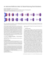 | An advection-reflection solver for detail-preserving fluid simulation Jonas Zehnder, Rahul Narain, Bernhard Thomaszewski | | | 2018 | Animation and Simulation | ✔️ | 5 | | × | | 1 |
| Learning three-dimensional flow for interactive aerodynamic design Nobuyuki Umetani, Bernd Bickel | | | 2018 | Animation and Simulation | × | | | × | | 0 |
| Toonsynth: example-based synthesis of hand-colored cartoon animations Marek Dvorožnák, Wilmot Li, Vladimir G. Kim, Daniel Sýkora | | | 2018 | Images | × | | | × | | 0 |
| Immersion of self-intersecting solids and surfaces Yijing Li, Jernej Barbič | | | 2018 | Geometry | ✔️ | 5 | | × | | 2 |
| Box cutter: atlas refinement for efficient packing via void elimination Max Limper, Nicholas Vining, ALLA SHEFFER | | | 2018 | Geometry | ✔️ | 5 | | × | | 1 |
| Synthetic depth-of-field with a single-camera mobile phone Neal Wadhwa, Rahul Garg, David E. Jacobs, Bryan E. Feldman, Nori Kanazawa, Robert Carroll, Yair Movshovitz-Attias, Jonathan T. Barron, Yael Pritch, Marc Levoy | | | 2018 | Images | × | | | × | | 0 |
| Dexterous manipulation and control with volumetric muscles Seunghwan Lee, Ri Yu, Jungnam Park, Mridul Aanjaneya, Eftychios Sifakis, Jehee Lee | | | 2018 | Animation and Simulation | ✔️ | 1 | | × | | 0 |
| Progressive Parameterizations Ligang Liu, Chunyang Ye, Ruiqi Ni, Xiao-Ming Fu | | | 2018 | Geometry | ✔️ | 5 | | × | | 0 |
| Neural best-buddies: sparse cross-domain correspondence Kfir Aberman, Jing Liao, Mingyi Shi, Dani Lischinski, Baoquan Chen, Daniel Cohen-Or | | | 2018 | Images | ✔️ | 5 | | × | | 1 |
| End-to-end Optimization of Optics and Image Processing for Achromatic Extended Depth of Field and Super-resolution Imaging Vincent Sitzmann, Steven Diamond, Yifan Peng, Xiong Dun, Stephen Boyd, Wolfgang Heidrich, Felix Heide, Gordon Wetzstein | | | 2018 | Images | ✔️ | 3 | | × | | 1 |
| Fluid directed rigid body control using deep reinforcement learning Pingchuan Ma, Yunsheng Tian, Zherong Pan, Bo Ren, Dinesh Manocha | | | 2018 | Animation and Simulation | × | | | ✔️ | 3 | 0 |
| In the blink of an eye: leveraging blink-induced suppression for imperceptible position and orientation redirection in virtual reality Eike Langbehn, Frank Steinicke, Markus Lappe, Gregory F. Welch, Gerd Bruder | | | 2018 | Virtual Reality | × | | | × | | 0 |
| Water surface wavelets Stefan Jeschke, Tomáš Skřivan, Matthias Müller-Fischer, Nuttapong Chentanez, Miles Macklin, Chris Wojtan | | | 2018 | Animation and Simulation | ✔️ | 2 | | × | | 1 |
| Fast winding numbers for soups and clouds Gavin Barill, Neil G. Dickson, Ryan Schmidt, David I. W. Levin, Alec Jacobson | | | 2018 | Geometry | ✔️ | 3 | | × | | 1 |
| DSCarver: decompose-and-spiral-carve for subtractive manufacturing Haisen Zhao, Hao Zhang, Shiqing Xin, Yuanmin Deng, Changhe Tu, Wenping Wang, Daniel Cohen-Or, Baoquan Chen | | | 2018 | Fabrication | × | | | × | | 0 |
| Parametric directional coding for precomputed sound propagation Nikunj Raghuvanshi, John Snyder | | | 2018 | Animation and Simulation | × | | | × | | 0 |
| Bayesian online regression for adaptive direct illumination sampling Petr Vévoda, Ivo Kondapaneni, Jaroslav Křivánek | | | 2018 | Rendering | ✔️ | 0 | | × | | 1 |
| CoreCavity: interactive shell decomposition for fabrication with two-piece rigid molds Kazutaka Nakashima, Thomas Auzinger, Emmanuel Iarussi, Ran Zhang, Takeo Igarashi, Bernd Bickel | | | 2018 | Fabrication | × | | | × | | 0 |
| Support-free volume printing by multi-axis motion Chengkai Dai, Charlie C. L. Wang, Chenming Wu, Sylvain Lefebvre, Guoxin Fang, Yong-Jin Liu | | | 2018 | Fabrication | ✔️ | 4 | | × | | 1 |
| Polyhedral Voronoi diagrams for additive manufacturing Jonàs Martínez, Samuel Hornus, Haichuan Song, Sylvain Lefebvre | | | 2018 | Fabrication | × | | | × | | 0 |
| Singularity-constrained octahedral fields for hexahedral meshing Heng Liu, Paul Zhang, Edward Chien, Justin Solomon, David Bommes | | | 2018 | Geometry | ✔️ | 2 | | × | 0 | 1 |
| An extended partitioned method for conservative solid-fluid coupling Muzaffer Akbay, Nicholas Nobles, Victor Zordan, Tamar Shinar | | | 2018 | Animation and Simulation | × | | | ✔️ | 1 | 0 |
| A Material Point Method for Thin Shells with Frictional Contact Qi Guo, Xuchen Han, Chuyuan Fu, Theodore Gast, Rasmus Tamstorf, Joseph Teran | | | 2018 | Animation and Simulation | × | | | × | | 0 |
| Shape Representation by Zippables Christian Schüller, Roi Poranne, Olga Sorkine-Hornung | | | 2018 | Fabrication | × | | | × | | 0 |
| Robust optimization for topological surface reconstruction Roee Lazar, Nadav Dym, Yam Kushinsky, Zhiyang Huang, Tao Ju, Yaron Lipman | | | 2018 | Geometry | ✔️ | 2 | | × | | 1 |
| 3D printing spatially varying color and translucency Alan Brunton, Can Ates Arikan, Tejas Madan Tanksale, Philipp Urban | | | 2018 | Fabrication | × | | | × | | 0 |
| HeadOn: Real-time Reenactment of Human Portrait Videos Justus Thies, Michael Zollhöfer, Christian Theobalt, Marc Stamminger, Matthias Niessner | | | 2018 | Images | × | | | × | | 0 |
| Rendering specular microgeometry with wave optics Ling-Qi Yan, Miloš Hašan, Bruce Walter, Steve Marschner, Ravi Ramamoorthi | | | 2018 | Rendering | ✔️ | 4 | | × | | 0 |
| Scalable laplacian eigenfluids Qiaodong Cui, Pradeep Sen, Theodore Kim | | | 2018 | Animation and Simulation | ✔️ | 4 | | × | | 1 |
| Tetrahedral meshing in the wild Yixin Hu, Qingnan Zhou, Xifeng Gao, Alec Jacobson, Denis Zorin, Daniele Panozzo | | | 2018 | Geometry | ✔️ | 5 | | × | | 1 |
| Quadrangulation through morse-parameterization hybridization Xianzhong Fang, Hujun Bao, Yiying Tong, Mathieu Desbrun, Jin Huang | | | 2018 | Geometry | ✔️ | 3 | | × | | 0 |
 | What characterizes personalities of graphic designs? Nanxuan Zhao, Ying Cao, Rynson W. H. Lau | | | 2018 | Images | ✔️ | 0 | | × | | 0 |
| Variational surface cutting Nicholas Sharp, Keenan Crane | | | 2018 | Geometry | ✔️ | 5 | | × | | 1 |
| 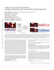 | Looking to listen at the cocktail party: a speaker-independent audio-visual model for speech separation Ariel Ephrat, Inbar Mosseri, Oran Lang, Tali Dekel, Kevin Wilson, Avinatan Hassidim, William T. Freeman, Michael Rubinstein | | | 2018 | Animation and Simulation | × | | | × | | 0 |
| Curved optimal delaunay triangulation Leman Feng, Pierre Alliez, Laurent Busé, Hervé Delingette, Mathieu Desbrun | | | 2018 | Geometry | × | | | × | | 0 |
| Blended cured quasi-newton for distortion optimization Yufeng Zhu, Robert Bridson, Danny M. Kaufman | | | 2018 | Geometry | ✔️ | 5 | | × | | 0 |
| Stitch Meshing Kui Wu, Xifeng Gao, Zachary Ferguson, Daniele Panozzo, Cem Yuksel | | | 2018 | Fabrication | ✔️ | 3 | | × | | 1 |
| Multi-Scale Simulation of Nonlinear Thin-Shell Sound with Wave Turbulence Gabriel Cirio, Ante Qu, George Drettakis, Eitan Grinspun, Changxi Zheng | | | 2018 | Animation and Simulation | × | | | × | | 0 |
| Deep convolutional priors for indoor scene synthesis Kai Wang, Manolis Savva, Angel X. Chang, Daniel Ritchie | | | 2018 | Geometry | ✔️ | 0 | | × | | 1 |
| Gradient-domain Volumetric Photon Density Estimation Adrien Gruson, Binh-Son Hua, Nicolas Vibert, Derek Nowrouzezahrai, Toshiya Hachisuka | | | 2018 | Rendering | ✔️ | 5 | | × | | 0 |
| High-fidelity facial reflectance and geometry inference from an unconstrained image Shugo Yamaguchi, Shunsuke Saito, Koki Nagano, Yajie Zhao, Weikai Chen, Kyle Olszewski, Shigeo Morishima, Hao Li | | | 2018 | Images | × | | | × | | 0 |
| Deep exemplar-based colorization Mingming He, Dongdong Chen, Jing Liao, Pedro V. Sander, Lu Yuan | | | 2018 | Images | ✔️ | 5 | | × | | 1 |
| Mode-adaptive neural networks for quadruped motion control He Zhang, Sebastian Starke, Taku Komura, Jun Saito | | | 2018 | Animation and Simulation | ✔️ | 3 | | × | | 0 |
| Optimal cone singularities for conformal flattening Yousuf Soliman, Dejan Slepčev, Keenan Crane | | | 2018 | Geometry | × | | | ✔️ | 3 | 0 |
| Skaterbots: Optimization-based Design and Motion Synthesis for Robotic Creatures with Legs and Wheels Moritz Geilinger, Roi Poranne, Ruta Desai, Bernhard Thomaszewski, Stelian Coros | | | 2018 | Animation and Simulation | × | | | × | | 0 |
| Computing a high-dimensional euclidean embedding from an arbitrary smooth riemannian metric Zichun Zhong, Wenping Wang, Bruno Lévy, Jing Hua, Xiaohu Guo | | | 2018 | Geometry | × | | | ✔️ | 3 | 0 |
| Real-time data-driven interactive rough sketch inking Edgar Simo-Serra, Satoshi Iizuka, Hiroshi Ishikawa | | | 2018 | Images | ✔️ | 4 | | × | | 1 |
| Visual Rhythm and Beat Abe Davis, Maneesh Agrawala | | | 2018 | Images | ✔️ | 4 | | × | | 1 |
| Scale-aware black-and-white abstraction of 3D shapes You-En Lin, Yong-Liang Yang, Hung-Kuo Chu | | | 2018 | Rendering | ✔️ | 4 | | × | | 1 |
| Rapid deployment of curved surfaces via programmable auxetics Mina Konaković-Luković, Julian Panetta, Keenan Crane, Mark Pauly | | | 2018 | Geometry | × | | | × | | 0 |
| A high-performance software graphics pipeline architecture for the GPU Michael Kenzel, Bernhard Kerbl, Dieter Schmalstieg, Markus Steinberger | | | 2018 | Rendering | ✔️ | 5 | | × | | 0 |
| Integer-only cross field computation Nahum Farchi, Mirela Ben-Chen | | | 2018 | Geometry | ✔️ | 5 | | × | | 2 |
| Computational design of nanostructural color for additive manufacturing Thomas Auzinger, Wolfgang Heidrich, Bernd Bickel | | | 2018 | Fabrication | × | | | × | | 0 |
| Deep context-aware descreening and rescreening of halftone images Tae-Hoon Kim, Sang Il Park | | | 2018 | Images | × | | | × | | 0 |
| Single-image SVBRDF capture with a rendering-aware deep network Valentin Deschaintre, Miika Aittala, Fredo Durand, George Drettakis, Adrien Bousseau | | | 2018 | Rendering | ✔️ | 5 | | × | | 2 |
| 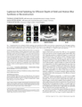 | Laplacian kernel splatting for efficient depth-of-field and motion blur synthesis or reconstruction Thomas Leimkühler, Hans-Peter Seidel, Tobias Ritschel | | | 2018 | Rendering | × | | | × | | 0 |
| Slang: language mechanisms for extensible real-time shading systems Yong He, Kayvon Fatahalian, Tim Foley | | | 2018 | Rendering | ✔️ | 3 | | × | | 2 |
| Metamolds: computational design of silicone molds Thomas Alderighi, Luigi Malomo, Daniela Giorgi, Nico Pietroni, Bernd Bickel, Paolo Cignoni | | | 2018 | Fabrication | × | | | × | | 0 |
| An empirical rig for jaw animation Gaspard Zoss, Derek Bradley, Pascal Bérard, Thabo Beeler | | | 2018 | Animation and Simulation | × | | | × | | 0 |
| Differentiable Programming for Image Processing and Deep Learning in Halide Tzu-Mao Li, Michaël Gharbi, Andrew Adams, Frédo Durand, Jonathan Ragan-Kelley | | | 2018 | Images | ✔️ | 3 | | × | | 2 |
| Instant 3D photography Peter Hedman, Johannes Kopf | | | 2018 | Images | × | | | × | | 0 |
| Interactive exploration of design trade-offs Adriana Schulz, Harrison Wang, Eitan Grinspun, Justin Solomon, Wojciech Matusik | | | 2018 | Fabrication | × | | | × | | 0 |
| Numerical Coarsening using Discontinuous Shape Functions Jiong Chen, Hujun Bao, Tianyu Wang, Mathieu Desbrun, Jin Huang | | | 2018 | Geometry | × | | | × | | 0 |
| Hyper-reduced projective dynamics Christopher Brandt, Elmar Eisemann, Klaus Hildebrandt | | | 2018 | Animation and Simulation | ✔️ | 5 | | × | | 2 |
| Denoising with kernel prediction and asymmetric loss functions Thijs Vogels, Fabrice Rousselle, Brian Mcwilliams, Gerhard Röthlin, Alex Harvill, David Adler, Mark Meyer, Jan Novák | | | 2018 | Rendering | × | | | × | | 0 |
| Generalized motorcycle graphs for imperfect quad-dominant meshes Nico Schertler, Daniele Panozzo, Stefan Gumhold, Marco Tarini | | | 2018 | Geometry | ✔️ | 1 | | × | | 1 |
| Optimizing for aesthetically pleasing qadrotor camera motion Christoph Gebhardt, Stefan Stevšić, Otmar Hilliges | | | 2018 | Animation and Simulation | × | | | × | | 0 |
| Scene-aware audio for 360° videos Dingzeyu Li, Timothy R. Langlois, Changxi Zheng | | | 2018 | Animation and Simulation | × | | | × | | 0 |
| A multi-scale model for simulating liquid-fabric interactions Yun (Raymond) Fei, Christopher Batty, Eitan Grinspun, Changxi Zheng | | | 2018 | Animation and Simulation | ✔️ | 5 | | × | | 1 |
| Faceshop: deep sketch-based face image editing Tiziano Portenier, Qiyang Hu, Attila Szabó, Siavash Arjomand Bigdeli, Paolo Favaro, Matthias Zwicker | | | 2018 | Images | × | | | × | | 0 |
| Scanner: efficient video analysis at scale Alex Poms, Will Crichton, Pat Hanrahan, Kayvon Fatahalian | | | 2018 | Images | ✔️ | 4 | | × | | 1 |
| Physical Simulation of Environmentally Induced Thin Shell Deformation Hsiao-Yu Chen, Arnav Sastry, Wim M. van Rees, Etienne Vouga | | | 2018 | Animation and Simulation | ✔️ | 1 | | × | | 0 |
| Voxel Cores: Efficient, robust, and provably good approximation of 3D medial axes Yajie Yan, David Letscher, Tao Ju | | | 2018 | Geometry | ✔️ | 5 | | × | | 1 |
| Learning symmetric and low-energy locomotion Wenhao Yu, Greg Turk, C. Karen Liu | | | 2018 | Animation and Simulation | ✔️ | 3 | | × | | 1 |
| Example-based Turbulence Style Transfer Syuhei Sato, Yoshinori Dobashi, Theodore Kim, Tomoyuki Nishita | | | 2018 | Animation and Simulation | × | | | ✔️ | 2 | 0 |
| Online optical marker-based hand tracking with deep labels Shangchen Han, Beibei Liu, Robert Wang, Yuting Ye, Christopher D. Twigg, Kenrick Kin | | | 2018 | Animation and Simulation | × | | | × | | 0 |
| Fabricating reflectors for displaying multiple images Kaisei Sakurai, Yoshinori Dobashi, Kei Iwasaki, Tomoyuki Nishita | | | 2018 | Fabrication | × | | | × | | 0 |
| Deep appearance models for face rendering Stephen Lombardi, Jason Saragih, Tomas Simon, Yaser Sheikh | | | 2018 | Rendering | × | | | × | | 0 |
| Magnetization dynamics for magnetic object interactions Seung-Wook Kim, Sun Young Park, Junghyun Han | | | 2018 | Animation and Simulation | × | | | × | | 0 |
| Accurate appearance preserving prefiltering for rendering displacement-mapped surfaces Lifan Wu, Shuang Zhao, Ling-Qi Yan, Ravi Ramamoorthi | | | 2019 | Rendering | ✔️ | 5 | | × | 0 | 2 |
| Wave-Based Non-Line-of-Sight Imaging using Fast f-k Migration David B. Lindell, Gordon Wetzstein, Matthew O'Toole | | | 2019 | Images | ✔️ | 5 | | × | 0 | 1 |
| Tangent-space optimization for interactive animation control Loïc Ciccone, Cengiz Öztireli, Robert W. Sumner | | | 2019 | Animation and Simulation | × | 0 | | × | 0 | 0 |
| PlanIT: planning and instantiating indoor scenes with relation graph and spatial prior networks Kai Wang, Yu-An Lin, Ben Weissmann, Manolis Savva, Angel X. Chang, Daniel Ritchie | | | 2019 | Geometry | ✔️ | 0 | | × | 0 | 0 |
| Tensor maps for synchronizing heterogeneous shape collections Qixing Huang, Zhenxiao Liang, Haoyun Wang, Simiao Zuo, Chandrajit Bajaj | | | 2019 | Geometry | × | 0 | | ✔️ | 0 | 0 |
| Compact snapshot hyperspectral imaging with diffracted rotation Daniel S. Jeon, Seung-Hwan Baek, Shinyoung Yi, Qiang Fu, Xiong Dun, Wolfgang Heidrich, Min H. Kim | | | 2019 | Images | × | 0 | | × | 0 | 0 |
| Distortion-free wide-angle portraits on camera phones YiChang Shih, Wei-Sheng Lai, Chia-Kai Liang | | | 2019 | Images | × | 0 | | × | 0 | 0 |
| CD-MPM: continuum damage material point methods for dynamic fracture animation Joshuah Wolper, Yu Fang, Minchen Li, Jiecong Lu, Ming Gao, Chenfanfu Jiang | | | 2019 | Animation and Simulation | ✔️ | 5 | | × | 0 | 0 |
| A Monte Carlo framework for rendering speckle statistics in scattering media Chen Bar, Marina Alterman, Ioannis Gkioulekas, Anat Levin | | | 2019 | Rendering | ✔️ | 2 | | × | 0 | 1 |
| Decomposed optimization time integrator for large-step elastodynamics Minchen Li, Ming Gao, Timothy Langlois, Chenfanfu Jiang, Danny M. Kaufman | | | 2019 | Animation and Simulation | ✔️ | 5 | | × | 0 | 2 |
| RedMax: efficient & flexible approach for articulated dynamics Ying Wang, Nicholas J. Weidner, Margaret A. Baxter, Yura Hwang, Danny M. Kaufman, Shinjiro Sueda | | | 2019 | Animation and Simulation | ✔️ | 3 | | × | 0 | 1 |
| Spectral coarsening of geometric operators Hsueh-Ti Derek Liu, Alec Jacobson, Maks Ovsjanikov | | | 2019 | Geometry | ✔️ | 5 | | × | 0 | 1 |
| Interactive hand pose estimation using a stretch-sensing soft glove Oliver Glauser, Shihao Wu, Daniele Panozzo, Otmar Hilliges, Olga Sorkine-Hornung | | | 2019 | Animation and Simulation | × | 0 | | × | | 0 |
| Real-time pose and shape reconstruction of two interacting hands with a single depth camera Franziska Mueller, Micah Davis, Florian Bernard, Oleksandr Sotnychenko, Mickeal Verschoor, Miguel A. Otaduy, Dan Casas, Christian Theobalt | | | 2019 | Animation and Simulation | × | 0 | | × | 0 | 0 |
| Using moments to represent bounded signals for spectral rendering Christoph Peters, Sebastian Merzbach, Johannes Hanika, Carsten Dachsbacher | | | 2019 | Rendering | ✔️ | 0 | | × | 0 | 1 |
 | Silly rubber: an implicit material point method for simulating non-equilibrated viscoelastic and elastoplastic solids Yu Fang, Minchen Li, Ming Gao, Chenfanfu Jiang | | | 2019 | Animation and Simulation | ✔️ | 5 | | × | 0 | 0 |
| 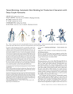 | NeuroSkinning: automatic skin binding for production characters with deep graph networks Lijuan Liu, Youyi Zheng, Di Tang, Yi Yuan, Changjie Fan, Kun Zhou | | | 2019 | Animation and Simulation | × | 0 | | × | 0 | 0 |
| SurfaceBrush: from virtual reality drawings to manifold surfaces Enrique Rosales, Jafet Rodriguez, ALLA SHEFFER | | | 2019 | Virtual Reality | × | 0 | | × | 0 | 0 |
| Visual smoothness of polyhedral surfaces Davide Pellis, Martin Kilian, Felix Dellinger, Johannes Wallner, Helmut Pottmann | | | 2019 | Geometry | × | 0 | | × | | 0 |
| Creating impactful characters: correcting human impact accelerations using high rate IMUs in dynamic activities Calvin Kuo, Ziheng Liang, Ye Fan, Jean-Sébastien Blouin, Dinesh K. Pai | | | 2019 | Animation and Simulation | × | 0 | | × | 0 | 0 |
| Navigating intrinsic triangulations Nicholas Sharp, Yousuf Soliman, Keenan Crane | | | 2019 | Geometry | ✔️ | 5 | | × | | 2 |
| Volume-aware design of composite molds Thomas Alderighi, Luigi Malomo, Daniela Giorgi, Bernd Bickel, Paolo Cignoni, Nico Pietroni | | | 2019 | Fabrication | × | 0 | | × | 0 | 0 |
| Direct Delta Mush Skinning and Variants Binh Huy Le, J P Lewis | | | 2019 | Animation and Simulation | × | 0 | | × | 0 | 0 |
| Hand modeling and simulation using stabilized magnetic resonance imaging Bohan Wang, George Matcuk, Jernej Barbič | | | 2019 | Geometry | × | 0 | | × | 0 | 0 |
 | Luminance-contrast-aware foveated rendering Okan Tarhan Tursun, Elena Arabadzhiyska-Koleva, Marek Wernikowski, Radosław Mantiuk, Hans-Peter Seidel, Karol Myszkowski, Piotr Didyk | | | 2019 | Virtual Reality | × | 0 | | × | 0 | 0 |
| Harmonic triangulations Marc Alexa | | | 2019 | Geometry | ✔️ | 2 | | × | | 1 |
| 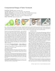 | Computational design of fabric formwork Xiaoting Zhang, Guoxin Fang, Melina Skouras, Gwenda Gieseler, Charlie C. L. Wang, Emily Whiting | | | 2019 | Fabrication | × | 0 | | × | 0 | 0 |
| Procedural phasor noise Thibault Tricard, Semyon Efremov, Cédric Zanni, Fabrice Neyret, Jonàs Martínez, Sylvain Lefebvre | | | 2019 | Images | ✔️ | 5 | | × | | 0 |
| Wallpaper pattern alignment along garment seams Katja Wolff, Olga Sorkine-Hornung | | | 2019 | Fabrication | × | 0 | | × | | 0 |
| Geometry-aware scattering compensation for 3D printing Denis Sumin, Tobias Rittig, Vahid Babaei, Thomas Nindel, Alexander Wilkie, Piotr Didyk, Bernd Bickel, Jaroslav Křivánek, Karol Myszkowski, Tim Weyrich | | | 2019 | Fabrication | × | 0 | | ✔️ | 1 | 0 |
| Variational implicit point set surfaces Zhiyang Huang, Nathan Carr, Tao Ju | | | 2019 | Geometry | ✔️ | 0 | | × | 0 | 2 |
| Hyperparameter optimization in black-box image processing using differentiable proxies Ethan Tseng, Felix Yu, Yuting Yang, Fahim Mannan, Karl ST. Arnaud, Derek Nowrouzezahrai, Jean-François Lalonde, Felix Heide | | | 2019 | Images | × | 0 | | × | | 0 |
| Affine interpolation in a lie group framework Sumukh Bansal, Aditya Tatu | | | 2019 | Animation and Simulation | ✔️ | 2 | | × | 0 | 1 |
| InteractionFusion: real-time reconstruction of hand poses and deformable objects in hand-object interactions Hao Zhang, Zi-Hao Bo, Jun-Hai Yong, Feng Xu | | | 2019 | Animation and Simulation | × | 0 | | × | 0 | 0 |
| Computational peeling art design Hao Liu, Xiao-Teng Zhang, Xiao-Ming Fu, Zhi-Chao Dong, Ligang Liu | | | 2019 | Geometry | ✔️ | 5 | | × | 0 | 1 |
| Atlas refinement with bounded packing efficiency Hao-Yu Liu, Xiao-Ming Fu, Chunyang Ye, Shuangming Chai, Ligang Liu | | | 2019 | Geometry | ✔️ | 0 | | × | 0 | 0 |
| PuppetMaster: robotic animation of marionettesx Simon Zimmermann, Roi Poranne, James M. Bern, Stelian Coros | | | 2019 | Animation and Simulation | × | 0 | | × | 0 | 0 |
| Optimal transport-based polar interpolation of directional fields Justin Solomon, Amir Vaxman | | | 2019 | Geometry | × | 0 | | × | 0 | 0 |
| Stylizing video by example Ondřej Jamriška, Šárka Sochorová, Ondřej Texler, Michal Lukáč, Jakub Fišer, Jingwan Lu, Eli Shechtman, Daniel Sýkora | | | 2019 | Images | ✔️ | 5 | | × | 0 | 1 |
| Optimal Multiple Importance Sampling Ivo Kondapaneni, Petr Vevoda, Pascal Grittmann, Tomáš Skřivan, Philipp Slusallek, Jaroslav Křivánek | | | 2019 | Rendering | ✔️ | 5 | | × | 0 | 1 |
 | Implicit untangling: a robust solution for modeling layered clothing Thomas Buffet, Damien Rohmer, Loïc Barthe, Laurence Boissieux, Marie-Paule Cani | | | 2019 | Animation and Simulation | × | 0 | | × | 0 | 0 |
| TriWild: robust triangulation with curve constraints Yixin Hu, Teseo Schneider, Xifeng Gao, Qingnan Zhou, Alec Jacobson, Denis Zorin, Daniele Panozzo | | | 2019 | Geometry | ✔️ | 5 | | × | | 2 |
| Progressive embedding Hanxiao Shen, Zhongshi Jiang, Denis Zorin, Daniele Panozzo | | | 2019 | Geometry | ✔️ | 4 | | × | | 1 |
| Anisotropic elasticity for inversion-safety and element rehabilitation Theodore Kim, Fernando De Goes, Hayley Iben | | | 2019 | Animation and Simulation | ✔️ | 2 | | × | 0 | 1 |
| Synthetic defocus and look-ahead autofocus for casual videography Xuaner Zhang, Kevin Matzen, Vivien Nguyen, Dillon Yao, You Zhang, Ren Ng | | | 2019 | Images | × | 0 | | × | | 0 |
| Finding hexahedrizations for small quadrangulations of the sphere Kilian Verhetsel, Jeanne Pellerin, Jean-François Remacle | | | 2019 | Geometry | ✔️ | 4 | | × | | 2 |
| Hierarchical russian roulette for vertex connections Yusuke Tokuyoshi, Takahiro Harada | | | 2019 | Rendering | × | 0 | | ✔️ | 4 | 0 |
| Parametrization quantization with free boundaries for trimmed quad meshing Max Lyon, Marcel Campen, David Bommes, Leif Kobbelt | | | 2019 | Geometry | × | 0 | | × | | 0 |
| SPOT: Sliced Partial Optimal Transport Nicolas Bonneel, David Coeurjolly | | | 2019 | Geometry | ✔️ | 4 | | × | 0 | 2 |
| Semantic photo manipulation with a generative image prior David Bau, Hendrik Strobelt, William Peebles, Jonas Wulff, Bolei Zhou, Jun-Yan Zhu, Antonio Torralba | | | 2019 | Images | ✔️ | 3 | | × | 0 | 0 |
| Handheld multi-frame super-resolution Bartlomiej Wronski, Ignacio Garcia-Dorado, Manfred Ernst, Damien Kelly, Michael Krainin, Chia-Kai Liang, Marc Levoy, Peyman Milanfar | | | 2019 | Images | × | 0 | | × | 0 | 0 |
| A null-scattering path integral formulation of light transport Bailey Miller, Iliyan Georgiev, Wojciech Jarosz | | | 2019 | Rendering | × | 0 | | ✔️ | 1 | 0 |
| Gaussian-product subdivision surfaces Reinhold Preiner, Tamy Boubekeur, Michael Wimmer | | | 2019 | Geometry | × | 0 | | × | 0 | 0 |
| Text-based editing of talking-head video Ohad Fried, Ayush Tewari, Michael Zollhöfer, Adam Finkelstein, Eli Shechtman, Dan B Goldman, Kyle Genova, Zeyu Jin, Christian Theobalt, Maneesh Agrawala | | | 2019 | Animation and Simulation | × | 0 | | × | 0 | 0 |
| Symmetric Moving Frames Etienne Corman, Keenan Crane | | | 2019 | Geometry | × | 0 | | × | 0 | 0 |
| 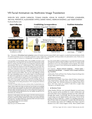 | VR facial animation via multiview image translation Shih-En Wei, Jason Saragih, Tomas Simon, Adam W. Harley, Stephen Lombardi, Michal Perdoch, Alexander Hypes, Dawei Wang, Hernan Badino, Yaser Sheikh | | | 2019 | Virtual Reality | × | 0 | | × | 0 | 0 |
| Fractional gaussian fields for modeling and rendering of spatially-correlated media Jie Guo, Yanjun Chen, Bingyang Hu, Ling-Qi Yan, Yanwen Guo, Yuntao Liu | | | 2019 | Rendering | × | 0 | | × | 0 | 0 |
| Beyond trilinear interpolation: higher quality for free Balázs Csébfalvi | | | 2019 | Rendering | × | 0 | | ✔️ | 4 | 0 |
| Vibration-minimizing motion retargeting for robotic characters Shayan Hoshyari, Hongyi Xu, Espen Knoop, Stelian Coros, Moritz Bächer | | | 2019 | Animation and Simulation | × | 0 | | × | 0 | 0 |
| A symmetric objective function for ICP Szymon Rusinkiewicz | | | 2019 | Geometry | ✔️ | 5 | | × | 0 | 2 |
| Synthetic silviculture: multi-scale modeling of plant ecosystems Miłosz Makowski, Torsten Hädrich, Jan Scheffczyk, Dominik L. Michels, Sören Pirk, Wojtek Pałubicki | | | 2019 | Animation and Simulation | × | 0 | | × | 0 | 0 |
| Photon surfaces for robust, unbiased volumetric density estimation Xi Deng, Shaojie Jiao, Benedikt Bitterli, Wojciech Jarosz | | | 2019 | Rendering | × | 0 | | × | 0 | 0 |
| Weaving geodesic foliations Josh Vekhter, Jiacheng Zhuo, Luisa F Gil Fandino, Qixing Huang, Etienne Vouga | | | 2019 | Geometry | ✔️ | 3 | | × | 0 | 2 |
| Accurate Markerless Jaw Tracking for Facial Performance Capture Gaspard Zoss, Thabo Beeler, Markus Gross, Derek Bradley | | | 2019 | Animation and Simulation | × | 0 | | × | | 0 |
| Physically-based statistical simulation of rain sound Shiguang Liu, Haonan Cheng, Yiying Tong | | | 2019 | Animation and Simulation | × | 0 | | × | 0 | 0 |
| 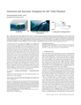 | Interactive and automatic navigation for 360° video playback Kyoungkook Kang, Sunghyun Cho | | | 2019 | Images | × | 0 | | × | 0 | 0 |
| Octahedral Frames for Feature-Aligned Cross Fields Share on Paul Zhang, Josh Vekhter, Edward Chien, David Bommes, Etienne Vouga, Justin Solomon | | | 2020 | Geometry | × | 0 | | × | 0 | 0 |
| Monte Carlo geometry processing: a grid-free approach to PDE-based methods on volumetric domains Rohan Sawhney, Keenan Crane | | | 2020 | Geometry | ✔️ | 4 | | × | 0 | 2 |
 | Fast tetrahedral meshing in the wild Yixin Hu, Teseo Schneider, Bolun Wang, Denis Zorin, Daniele Panozzo | | | 2020 | Geometry | ✔️ | 5 | | × | 0 | 3 |
 | Discrete differential operators on polygonal meshes Fernando De Goes, Andrew Butts, Mathieu Desbrun | | | 2020 | Geometry | × | 0 | | × | 0 | 0 |
| 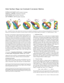 | Inter-surface maps via constant-curvature metrics Patrick Schmidt, Marcel Campen, Janis Born, Leif Kobbelt | | | 2020 | Geometry | × | 0 | | × | 0 | 0 |
| Exact and efficient polyhedral envelope containment check Bolun Wang, Teseo Schneider, Yixin Hu, Marco Attene, Daniele Panozzo | | | 2020 | Geometry | ✔️ | 0 | | × | 0 | 0 |
| Quad-mesh based isometric mappings and developable surfaces Caigui Jiang, Cheng Wang, Florian Rist, Johannes Wallner, Helmut Pottmann | | | 2020 | Geometry | × | 0 | | ✔️ | 2 | 0 |
| A level-set method for magnetic substance simulation Xingyu Ni, Bo Zhu, Bin Wang, Baoquan Chen | | | 2020 | Animation and Simulation | × | 0 | | × | 0 | 0 |
| Principal symmetric meshes Davide Pellis, Hui Wang, Martin Kilian, Florian Rist, Helmut Pottmann, Christian Müller | | | 2020 | Geometry | × | 0 | | ✔️ | 1 | 0 |
| LoopyCuts: practical feature-preserving block decomposition for strongly hex-dominant meshing Marco Livesu, Nico Pietroni, Enrico Puppo, Alla Sheffer, Paolo Cignoni | | | 2020 | Geometry | ✔️ | 0 | | × | 0 | 2 |
| Surface multigrid via intrinsic prolongation Hsueh-Ti Derek Liu, Jiayi Eris Zhang, Mirela Ben-Chen, Alec Jacobson | | | 2021 | Geometry | ✔️ | 4 | | × | 0 | 3 |
| General Virtual Sketching Framework for Vector Line Art Haoran Mo, Edgar Simo-Serra, Chengying Gao, Changqing Zou, Ruomei Wang | | | 2021 | Images | ✔️ | 4 | | × | 0 | 2 |
| Orienting point clouds with dipole propagation Gal Metzer, Rana Hanocka, Denis Zorin, Raja Giryes, Daniele Panozzo, Daniel Cohen-Or | | | 2021 | Geometry | ✔️ | 5 | | × | 0 | 1 |